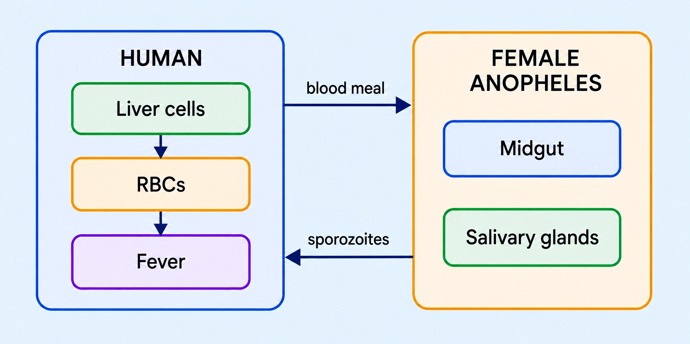

Biology
Chapter 7: Human Health and Disease — Foundations
Biological knowledge drives better health, food security, and societal change
BIOLOGY AND HUMAN WELFARE
📖Definition & Introduction
- Biology and human welfare explains how understanding life processes improves human health and living standards.
- Key impacts include prevention and treatment of disease, safer surgery, and longer life expectancy.
- Agricultural biology improves crop yield/quality, supporting food security and productivity.
- Advances in diagnostics enable early detection and control of diseases in individuals and communities.
- Progress in microbes, immunity, medicines, and farming methods can drive large socio-cultural and demographic change.
🖼️Diagram
Biology → interventions in health/agriculture → longer life, food security, and broad societal change.
🎯Key Concepts
- NoneAntibiotics made many bacterial infections treatable, transforming medical practice.
- NonePlant-origin drugs and plant-derived leads, including compounds produced synthetically, expanded therapeutic options beyond crude natural extracts.
- NoneAnaesthetics enabled safer, more complex surgery and improved healthcare outcomes.
- NoneBetter microbiology and immunity knowledge supports vaccines, infection control, and public health.
- NoneImproved diagnostics guide correct treatment and reduce spread via early detection.
- NoneGenetics and plant breeding increase yield, reduce crop duration, and strengthen food availability.
🔎HEALTH IMPACT: WHAT BIOLOGY ENABLED
- Antibiotics revolutionised treatment of infectious diseases; reduced deaths from many bacterial infections.
- Anaesthetics made surgery safer by allowing pain-free procedures and better operative care.
- Plant-derived drugs and plant-origin leads expanded therapeutic options when natural supply/consistency was limiting.
- Diagnostics (tests + microscopy + clinical methods) help identify cause and guide correct therapy.
- Net effect: major rise in life expectancy and improved quality of life.
⚙️AGRICULTURE & FOOD SECURITY: SWAMINATHAN + GREEN REVOLUTION LINK
- Genetics + plant breeding → improved crop varieties; higher yield and better quality.
- Short-duration, high-yielding rice varieties, including scented Basmati, supported efficient cropping.
- IARI Cytogenetics & Radiation Research School enabled development of improved crop varieties.
- Swaminathan initiated collaboration with Norman Borlaug → Mexican wheat varieties introduced in India.
- Outcome: Green Revolution recognition and stronger food security through higher productivity.
⚖️BIOLOGY-DRIVEN WELFARE: HEALTH vs AGRICULTURE
| Basis | Health & Medicine | Agriculture & Food |
|---|---|---|
| Core aim | Reduce disease burden; improve survival and quality of life | Increase yield/quality; ensure stable food availability |
| Key biological base | Microbes, immunity, human physiology, pharmacology | Genetics, plant breeding, crop physiology, pest/pathogen biology |
| Typical interventions | Antibiotics, vaccines, anaesthetics, diagnostics | Improved varieties, crop scheduling, better farming practices |
| Major outcomes | Life expectancy ↑; infant/maternal mortality ↓ | Food security ↑; productivity ↑; socio-economic change |
| Example from India | Immunisation programmes; infection control measures | Swaminathan + Borlaug → Mexican wheat → Green Revolution |
✏️Solved Q&A
1
Explain the sequence linking biological advances to societal change.
Answer:
Start with biological knowledge: microbes, immunity, medicines, and farming methods.
This enables interventions: antibiotics/vaccines/diagnostics and improved crop varieties/practices.
Health improves (mortality ↓, life expectancy ↑) and food security improves (availability ↑).
Together, they raise productivity and influence population growth patterns and socio-cultural change.
Start with biological knowledge: microbes, immunity, medicines, and farming methods.
This enables interventions: antibiotics/vaccines/diagnostics and improved crop varieties/practices.
Health improves (mortality ↓, life expectancy ↑) and food security improves (availability ↑).
Together, they raise productivity and influence population growth patterns and socio-cultural change.
✓ Biology → medical + agricultural interventions → better health and food security → higher productivity and societal/demographic change.
2
In a short note, connect M. S. Swaminathan to food security and the Green Revolution in India.
Answer:
State role: Swaminathan worked in genetics and plant breeding to develop improved crop varieties and strengthen food security.
Mention named link: he initiated collaboration with Norman Borlaug.
Key input: Mexican wheat varieties were introduced in India.
Conclude outcome: higher productivity and strong recognition associated with the Green Revolution.
State role: Swaminathan worked in genetics and plant breeding to develop improved crop varieties and strengthen food security.
Mention named link: he initiated collaboration with Norman Borlaug.
Key input: Mexican wheat varieties were introduced in India.
Conclude outcome: higher productivity and strong recognition associated with the Green Revolution.
✓ Swaminathan’s plant-breeding leadership and Borlaug collaboration helped introduce Mexican wheat, boosting yield and strengthening food security (Green Revolution).
⭐Important Points
- Biology is crucial for human welfare mainly via health care and agriculture improvements.
- Antibiotics, plant-derived drugs (including synthetically produced plant-origin compounds), and anaesthetics are standard examples of biology-driven medical impact.
- Improved diagnostics and public-health practices support disease control beyond treatment alone.
- Health is not merely absence of disease; it is a state of physical, mental and social well-being, improving productivity and longevity at community level.
- Green Revolution context: Swaminathan + Borlaug + Mexican wheat → improved agricultural productivity and food security.
💡Memory Technique
“Mnemonic: MAD-F (Welfare pillars)”
📌Quick Recap
Biology and human welfare: using life-science knowledge to improve health, agriculture, and living standards.Core linkage: microbes/immunity/medicines/farming methods → better health + better food security → socio-cultural and demographic change.Antibiotics mainly act against bacteria; they do not treat viral infections.Anaesthetics enable safer and more complex surgical procedures.Diagnostics identify cause and guide management; they are not the treatment itself.Swaminathan: genetics + plant breeding; IARI Cytogenetics & Radiation Research School supported improved varieties.Green Revolution linkage (exam-ready): Swaminathan + Borlaug collaboration → Mexican wheat in India → productivity ↑ and food security ↑.
Indian plant geneticist and breeder linked to India’s Green Revolution through crop improvement and food security work
M S SWAMINATHAN
📖Definition & Introduction
- M. S. Swaminathan is an Indian plant geneticist and breeder known for advancing high-yielding crop varieties and strengthening food security.
- Full name: Monkambu Sambasivan Swaminathan; born in August 1925 at Kumbakonam, Tamil Nadu.
- Training: graduation and post-graduation in Botany from Madras University; developed expertise in genetics and plant breeding through work in many institutions in India and abroad.
- At IARI, the Cytogenetics & Radiation Research School enabled development of improved crop varieties (as stated in the text).
- Green Revolution link (as in text): collaboration with Norman Borlaug → introduction of Mexican wheat varieties in India → recognition as part of the Green Revolution with higher productivity.
🖼️Diagram
Concept flow (as per text): Swaminathan’s crop-improvement leadership + Borlaug collaboration → Mexican wheat in India → Green Revolution productivity gains.
🎯Key Concepts
- 🧬Genetic improvement: improving crop yield and quality using genetics and plant breeding.
- 🏫IARI contribution: Cytogenetics & Radiation Research School at IARI enabled improved crop varieties.
- 🌾High-yielding rice: short-duration, high-yielding rice including scented Basmati (mentioned in text).
- 🤝Green Revolution linkage: collaboration with Norman Borlaug and introduction of Mexican wheat varieties in India.
- 🗓️Crop scheduling: planning sowing/harvest timing to improve yield and efficiency.
- 🍽️Crop cafeteria concept: field-based comparison/choice among crop varieties.
🔎CORE CONTRIBUTIONS (AS IN TEXT)
- IARI Cytogenetics & Radiation Research School enabled development of improved crop varieties.
- High-yielding rice varieties: short-duration, high-yielding rice including scented Basmati.
- Crop cafeteria concept: compare and choose crop varieties under field conditions.
- Crop scheduling: plan crop timing to improve yield and efficiency.
- Genetic improvement: raise yield and quality using genetics and plant breeding.
⚙️GREEN REVOLUTION LINKAGE (EXAM FRAMING)
- Write the chain: Swaminathan → Borlaug collaboration → Mexican wheat introduced in India → Green Revolution.
- Outcome to state: improved agricultural productivity and wide recognition.
- Use as human-welfare example: biology in agriculture → food security → societal change.
✏️Solved Q&A
1
In an exam answer on the Green Revolution in India (as per this text), how should you connect M. S. Swaminathan to it?
Answer:
State: collaboration was initiated with Norman Borlaug.
Add: Mexican wheat varieties were introduced in India.
Conclude: this is linked with the Green Revolution and improved agricultural productivity.
State: collaboration was initiated with Norman Borlaug.
Add: Mexican wheat varieties were introduced in India.
Conclude: this is linked with the Green Revolution and improved agricultural productivity.
✓ Swaminathan → Borlaug collaboration → Mexican wheat in India → Green Revolution (higher productivity/recognition).
2
List any four contributions of M. S. Swaminathan explicitly named in the text.
Answer:
Choose any four of the named points from the text.
Write them as crisp phrases (no extra claims).
Choose any four of the named points from the text.
Write them as crisp phrases (no extra claims).
✓ Any four: IARI Cytogenetics & Radiation Research School; high-yielding short-duration rice (including scented Basmati); crop cafeteria concept; crop scheduling; genetic improvement.
⭐Important Points
- Full name: Monkambu Sambasivan Swaminathan; born in August 1925 at Kumbakonam, Tamil Nadu.
- Training: Botany (UG/PG) from Madras University; expertise in genetics and plant breeding.
- IARI: Cytogenetics & Radiation Research School enabled improved crop varieties.
- Rice improvement in text: short-duration, high-yielding rice including scented Basmati.
- Terms to remember: crop cafeteria, crop scheduling, genetic improvement.
💡Memory Technique
“Mnemonic: “SWA–MIN–THEN” (exam chain)”
📌Quick Recap
Name & birth: Monkambu Sambasivan Swaminathan; born in August 1925 at Kumbakonam, Tamil Nadu.Field: plant genetics and plant breeding; linked to Indian agriculture and food security.IARI contribution: Cytogenetics & Radiation Research School enabled improved crop varieties.Rice: short-duration, high-yielding rice including scented Basmati (as per text).Concepts: crop cafeteria; crop scheduling; genetic improvement.Green Revolution chain: Swaminathan → Borlaug collaboration → Mexican wheat introduced in India → higher productivity/recognition.Programmes/initiatives named: Lab-to-Land; food security; environmental programmes.Honour mentioned: Padma Bhushan (plus other awards/medals/fellowships noted in text).
Genetics + plant breeding + programmes that powered India’s food security gains
M. S. SWAMINATHAN: CONTRIBUTIONS TO INDIAN AGRICULTURE (GREEN REVOLUTION)
📖Definition & Introduction
- M. S. Swaminathan led scientific crop improvement in India and helped trigger the Green Revolution.
- At IARI, he built strength in cytogenetics and a radiation research school to develop improved varieties.
- He promoted high-yielding, short-duration rice varieties, including improved scented Basmati lines.
- He initiated collaboration with Norman Borlaug and supported introduction of Mexican wheat varieties in India.
- He advanced production strategies like crop cafeteria and crop scheduling to raise efficiency and yield stability.
🖼️Diagram
Swaminathan’s science base (IARI) + collaborations + field strategies → Green Revolution productivity gains.
🎯Key Concepts
- 🧬IARI cytogenetics + radiation research: scientific base for faster variety development.
- 🌾High-yielding, short-duration rice: more crops/year and better fit to Indian seasons.
- 🍚Scented rice focus: improved productivity/quality in premium types like Basmati.
- 🤝Swaminathan–Borlaug linkage: Mexican wheat introductions central to India’s Green Revolution.
- 🗓️Crop scheduling: planned sowing/harvest windows to match water, inputs, and climate.
- 🧪Crop cafeteria: field screening of many genotypes/inputs together under local conditions.
🔎WHAT EXAMS EXPECT YOU TO LINK (NAME → ACTION → OUTCOME)
- Swaminathan → Indian plant breeding leadership → improved varieties + food security.
- Norman Borlaug → wheat breeding pioneer → source of Mexican wheat introductions.
- Mexican wheat in India → higher yield potential (with inputs) → part of Green Revolution narrative.
- IARI cytogenetics/radiation research → accelerated creation/selection of useful variability in crops.
⚙️KEY PROGRAMMES & FIELD IDEAS (ONE-LINERS)
- Lab-to-Land: take proven research and practices to farmers for adoption under real conditions.
- Crop cafeteria: grow many candidate lines together to compare performance under local stress.
- Crop scheduling: plan sowing/harvest to fit rainfall/irrigation, pest peaks, and input availability.
- Overall aim: combine genetics + management to raise yield, stability, and quality.
⚖️Green Revolution Linkage: Swaminathan vs Borlaug (exam framing)
| Basis | M. S. Swaminathan (India) | Norman Borlaug (International) |
|---|---|---|
| Primary role | Scientific leadership in Indian crop improvement; built IARI research capacity | Wheat breeder; developed high-yielding lines (Mexican wheat) |
| Key connection | Initiated collaboration and facilitated introduction/adaptation in India | Provided germplasm/varieties that were introduced into India |
| Exam phrase | Swaminathan + Borlaug + Mexican wheat → Green Revolution in India | Borlaug’s Mexican wheat varieties used as key inputs in India’s Green Revolution |
✏️Solved Q&A
1
NEET-style: Explain how M. S. Swaminathan is linked to the Green Revolution in India.
Answer:
Mention collaboration with Norman Borlaug.
State that Mexican wheat varieties were introduced into India through this linkage.
Conclude: these introductions, along with Indian breeding/management, contributed to the Green Revolution and higher productivity.
Mention collaboration with Norman Borlaug.
State that Mexican wheat varieties were introduced into India through this linkage.
Conclude: these introductions, along with Indian breeding/management, contributed to the Green Revolution and higher productivity.
✓ Swaminathan connected India’s breeding efforts with Borlaug’s Mexican wheat introductions, forming a core Green Revolution link that boosted productivity.
2
Boards-style: What do the terms crop cafeteria and crop scheduling mean in Swaminathan’s contributions?
Answer:
Crop cafeteria: systematic field comparison of many crop lines/options together to identify best performers locally.
Crop scheduling: planned timing of cropping operations (sowing/harvest) to match season, water and other constraints.
Both support yield improvement by improving choice (cafeteria) and timing (scheduling).
Crop cafeteria: systematic field comparison of many crop lines/options together to identify best performers locally.
Crop scheduling: planned timing of cropping operations (sowing/harvest) to match season, water and other constraints.
Both support yield improvement by improving choice (cafeteria) and timing (scheduling).
✓ Crop cafeteria = multi-option field screening; crop scheduling = planned crop timing to improve efficiency and yield stability.
⭐Important Points
- Write the triad: Swaminathan + Borlaug + Mexican wheat when asked about Green Revolution linkage.
- IARI cytogenetics & radiation research school enabled improved variety development (explicit textbook point).
- Mention high-yielding, short-duration rice; add scented/Basmati as quality-focused improvement.
- Use correct programme/ideas: Lab-to-Land, crop cafeteria, crop scheduling.
- Conclude with outcomes: higher productivity and food security.
💡Memory Technique
“Mnemonic: SWA-MI-NATHAN → what to recall in answers”
📌Quick Recap
IARI: established/strengthened cytogenetics and radiation research school → improved crop varieties.Developed/promoted short-duration, high-yielding rice and improved scented Basmati lines.Green Revolution exam link: Swaminathan ↔ Norman Borlaug → Mexican wheat varieties → higher productivity.Crop cafeteria: compare many genotypes/options together under local conditions to select the best.Crop scheduling: plan sowing/harvest windows to match resources and season for better efficiency.Lab-to-Land: move research outputs to farmers’ fields for adoption and impact on food security.
Health = well-being; shaped by genes, infections, lifestyle, and community prevention
HUMAN HEALTH AND DISEASES
📖Definition & Introduction
- Health is a state of complete physical, mental and social well-being (not just absence of disease).
- Disease is a condition where functioning of one or more organs/systems is adversely affected and signs/symptoms appear.
- Mind can influence the immune system via neural and endocrine pathways; the immune system plays a central role in maintaining health.
- Major determinants of health include genetic factors, infections, and lifestyle (diet, rest, exercise, habits).
- Public health measures (vaccination, sanitation, vector control, safe food/water) strongly affect community health outcomes.
🖼️Diagram
🎯Key Concepts
- 🧬Genetic disorders: defects/deficiencies present at birth; may be inherited.
- 🦠Infections: pathogens enter, multiply, and disturb vital activities → functional/morphological damage.
- 🥗Lifestyle: balanced diet, rest, exercise and hygiene can prevent many diseases.
- 🧠Mind–immune link: mental state affects immunity via neuro-endocrine control.
- 💉Vaccination works due to immune memory; helps control/eradicate infectious diseases.
- 🚰Sanitation and safe food/water break faeco-oral transmission (e.g., typhoid, amoebiasis, ascariasis).
🔎DETERMINANTS OF HEALTH (EXAM LIST)
- Genetic factors: inherited defects/deficiencies present at birth can predispose disease.
- Infections: pathogens (bacteria, viruses, fungi, protozoans, helminths) enter and multiply; damage tissues and disrupt function.
- Lifestyle: quality of food/water intake, rest, exercise and habits strongly affect health status.
- Mental state: affects immunity via neural and endocrine systems (mind–body–immune link).
⚙️MAINTAINING GOOD HEALTH: PERSONAL + PUBLIC
- Personal: balanced diet, personal hygiene, regular exercise; yoga supports physical and mental health.
- Awareness: knowledge of diseases and their effects on body functions improves prevention and early action.
- Public: vaccination (immunisation) against infectious diseases; proper waste disposal; control of vectors.
- Food/water hygiene: safe drinking water and hygienic food handling reduce typhoid/amoebiasis/ascariasis.
- Air-borne precautions: reduce exposure to droplets/aerosols in diseases like pneumonia and common cold.
⚖️INFECTIOUS vs NON-INFECTIOUS DISEASES
| Basis | Infectious | Non-infectious |
|---|---|---|
| Cause | Pathogens enter and multiply in host | Non-pathogen causes (genetic, lifestyle, degenerative, etc.) |
| Transmission | Can spread person-to-person (direct/indirect) | Do not spread person-to-person |
| Prevention focus | Hygiene, vaccination, vector control, avoid contact with infected persons/belongings | Lifestyle modification, screening, long-term management; vaccines usually not applicable, except limited indirect prevention for some cancers (e.g., HPV, Hep B) |
| Textbook examples (from chapter headings) | AIDS (can be fatal infectious disease); common cold; pneumonia | Cancer (major cause of death) |
✏️Solved Q&A
1
A student writes: "Health means absence of disease." Correct the statement as per textbook definition.
Answer:
State that health is not merely absence of disease or physical fitness.
Write the complete definition: a state of complete physical, mental and social well-being.
State that health is not merely absence of disease or physical fitness.
Write the complete definition: a state of complete physical, mental and social well-being.
✓ Health is a state of complete physical, mental and social well-being, not merely absence of disease.
2
An outbreak of fever spreads through a hostel via shared glasses/utensils and cough droplets. Which disease category does this suggest, and what immediate control measures should be advised?
Answer:
Shared utensils + droplets indicate an infectious disease spread by indirect contact and droplets/aerosols (as described for pneumonia/common cold).
Control: stop sharing utensils; ensure hand and respiratory hygiene; isolate symptomatic individuals; reduce close contact and crowding.
Shared utensils + droplets indicate an infectious disease spread by indirect contact and droplets/aerosols (as described for pneumonia/common cold).
Control: stop sharing utensils; ensure hand and respiratory hygiene; isolate symptomatic individuals; reduce close contact and crowding.
✓ Infectious disease; advise isolation of symptomatic students, no sharing of utensils, and strict hand/respiratory hygiene with reduced close contact.
⭐Important Points
- Health is broader than disease-free status: includes physical, mental and social well-being.
- Major health factors (must list): genetic disorders, infections, lifestyle.
- Disease definition in exams: adverse organ/system function + appearance of signs and symptoms (not only infection).
- Maintaining health: include both personal measures (diet, hygiene, exercise, yoga) and community measures (vaccination, waste disposal, vector control, safe food/water).
- Infectious diseases can spread easily; non-infectious do not spread person-to-person; cancer is a major non-infectious cause of death.
💡Memory Technique
“G-I-L = Health Factors”
📌Quick Recap
Health: complete physical + mental + social well-being (not merely absence of disease).Disease: adverse organ/system function + appearance of signs and symptoms.Major determinants of health (NCERT list): genetic disorders, infections, lifestyle.Personal measures for good health: balanced diet, personal hygiene, regular exercise; yoga supports physical and mental health.Community/public measures: awareness, vaccination (immunisation), proper waste disposal, vector control, hygiene in food and water resources.Classification: infectious diseases spread person-to-person; non-infectious diseases do not spread person-to-person.
Health as well-being; disease as altered function—causes, spread, prevention
HEALTH–DISEASE CONCEPTS
📖Definition & Introduction
- Health = state of complete physical, mental and social well-being (not just absence of disease).
- Disease = adverse effect on functioning of one or more organs/systems with signs and symptoms.
- Major determinants of health: genetic factors, infections, and lifestyle (diet, rest, exercise, habits).
- Infectious diseases are transmissible; non-infectious diseases are not transmitted person-to-person.
- Public health aims to prevent disease via hygiene, vaccination, safe food/water, and vector control.
🎯Key Concepts
- 🧬Genetic disorders: present at birth; inherited defects/deficiencies.
- 🦠Infection: pathogens enter, multiply, and damage tissues/organ function.
- 🏃Lifestyle: balanced diet + hygiene + regular exercise; yoga supports physical & mental health.
- 🚿Hygiene breaks faeco-oral spread (typhoid, amoebiasis, ascariasis).
- 🦟Vector control is key for malaria/filariasis/dengue/chikungunya (remove breeding sites).
- 💉Vaccination works via immune memory; smallpox eradicated; polio etc. controlled.
🔎CLASSIFICATION OF DISEASES
- Infectious: easily transmitted person-to-person; caused by pathogens (bacteria, viruses, fungi, protozoa, helminths).
- Non-infectious: not transmissible; includes major burdens like cancer; substance abuse also harms health.
- Pathogens: enter by various means → multiply → disrupt vital activities → morphological + functional damage.
- Pathogens show adaptations to survive in host (e.g., gut pathogens tolerate low pH + digestive enzymes).
⚙️PREVENTION: HYGIENE, VACCINES, VECTOR CONTROL
- Personal hygiene: clean body; clean drinking water; clean food/vegetables/fruits.
- Public hygiene: safe disposal of waste/excreta; disinfection of water reservoirs/pools; hygiene in public catering.
- Vector control (most important for vector-borne diseases): eliminate breeding sites (no water stagnation; clean coolers).
- Protection & control: mosquito nets; wire-mesh on doors/windows; larvivorous fish (Gambusia); insecticide spray; improve drainage.
- Vaccines: based on immune memory; vaccines help control/eradicate infections (smallpox eradicated; polio, diphtheria, pneumonia, tetanus controlled).
⚖️INFECTIOUS vs NON-INFECTIOUS DISEASES
| Basis | Infectious | Non-infectious |
|---|---|---|
| Cause | Pathogens (bacteria/virus/fungus/protozoa/helminths) | Not due to transmissible pathogens |
| Spread | Transmissible (person-to-person directly/indirectly; may involve vectors) | Not transmitted person-to-person |
| Control focus | Hygiene + vaccination + vector control + isolation/avoid contact (as needed) | Lifestyle modification + screening/therapy (as applicable) |
| Examples (from chapter themes) | Typhoid, pneumonia, common cold, malaria, amoebiasis, ascariasis, ringworm | Cancer (major cause of death) |
✏️Solved Q&A
1
A student writes: "Health means no disease." Correct this statement with the standard definition.
Answer:
Health is not limited to absence of disease or mere physical fitness.
Write the complete definition: state of complete physical, mental and social well-being.
Health is not limited to absence of disease or mere physical fitness.
Write the complete definition: state of complete physical, mental and social well-being.
✓ Health = complete physical, mental and social well-being.
2
A patient has fever and cough after close contact with an infected person. Name a key transmission route and a preventive step (conceptual).
Answer:
For infections like pneumonia/common cold, transmission can occur via inhalation of droplets/aerosols from cough/sneeze.
Prevention includes avoiding close contact and maintaining hygiene; for respiratory spread, reducing exposure to droplets is critical.
For infections like pneumonia/common cold, transmission can occur via inhalation of droplets/aerosols from cough/sneeze.
Prevention includes avoiding close contact and maintaining hygiene; for respiratory spread, reducing exposure to droplets is critical.
✓ Route: droplets/aerosols; Prevention: avoid close contact with infected person and follow hygiene/respiratory precautions.
⭐Important Points
- Health includes physical, mental and social well-being; not just absence of disease.
- Disease definition is functional: adverse organ/system function with signs and symptoms (not only infection).
- Determinants: genetic factors + infections + lifestyle; write all three in answers.
- Infectious diseases require breaking transmission: hygiene, safe food/water, avoid contact, vaccination, and vector control.
- Vector control must target breeding sites (no stagnation; clean coolers); add nets/wire-mesh + biological/chemical measures.
💡Memory Technique
“3D + 3C QUICK RECALL”
📌Quick Recap
Health: complete physical, mental and social well-being.Disease: impaired organ/system function + signs & symptoms.Disease classes: infectious (transmissible) vs non-infectious (non-transmissible).Determinants of health: genetic + infections + lifestyle.Prevention core: balanced diet, personal hygiene, regular exercise, yoga + public measures (vaccination, waste disposal, vector control, safe food/water).Vector-borne prevention: eliminate breeding sites; nets; wire-mesh; larvivorous fish (Gambusia); insecticides; drainage improvement.
Classify diseases; understand pathogens/parasites, their damage, and host-adaptation needs
INFECTIOUS VS NON-INFECTIOUS DISEASES
📖Definition & Introduction
- Disease = adverse effect on organ/system function with signs and symptoms.
- Infectious diseases are caused by pathogens and can spread person-to-person (direct/indirect).
- Non-infectious diseases do not transmit person-to-person; causes include genetic, lifestyle, degenerative disorders and cancer.
- Pathogens are disease-causing organisms: bacteria, viruses, fungi, protozoa, helminths, etc.
- Parasites live in/on a host and harm it; therefore most parasites are pathogens.
- Pathogenesis core: enter host → multiply → interfere with vital activities → cause morphological + functional damage.
🖼️Diagram
Two broad classes: infectious (pathogen-driven) vs non-infectious (non-transmissible).
🎯Key Concepts
- 🔁Infectious disease requires pathogen entry + survival + multiplication inside host.
- 🧩Symptoms often arise from tissue damage + immune response to the pathogen.
- 🧫A pathogen’s success depends on adaptations to the host micro-environment.
- 🧪Gut pathogens must tolerate low stomach pH and resist digestive enzymes.
- 🚫Non-infectious diseases are not spread by person-to-person contact; prevention targets risk factors, not isolation.
🔎CLASSIFICATION SNAPSHOT (EXAM-READY)
- Infectious: spread by contact, droplets, vectors, food/water, or fomites.
- Non-infectious: genetic disorders, nutritional deficiencies, lifestyle diseases, cancer, degenerative disorders.
- AIDS is infectious (viral) though it may have long latency before symptoms.
⚙️HOW PATHOGENS CAUSE DAMAGE (PATHOGENESIS CORE)
- Step 1: Entry via skin breaks, inhalation, ingestion, sexual contact, vectors.
- Step 2: Multiplication at target site or in blood/lymph.
- Step 3: Interference with normal cell/organ functions; nutrient theft in parasites.
- Step 4: Morphological damage: tissue lesions, cell death, inflammation.
- Step 5: Functional damage: impaired gas exchange, absorption, nerve/muscle action, etc.
⚖️Infectious vs Non-infectious (High-yield Comparison)
| Basis | Infectious diseases | Non-infectious diseases |
|---|---|---|
| Cause | Pathogens (bacteria/virus/fungi/protozoa/helminths) | Genetic, lifestyle, nutritional, degenerative, cancer |
| Transmission | Yes (direct/indirect; droplet, vector, food/water, fomites) | No person-to-person transmission |
| Key requirement for occurrence | Entry + survival + multiplication in host | Presence of risk factor/defect; no pathogen needed |
| Control focus | Break transmission; hygiene, vaccination, vector control, drugs | Risk-factor control; screening, lifestyle change, specific therapy |
| Examples (chapter-linked) | Typhoid, pneumonia, common cold, malaria, ringworm | Cancer (major cause of death); genetic disorders |
✏️Solved Q&A
1
Why are most parasites considered pathogens?
Answer:
A parasite lives in/on the host and derives nutrition/shelter from it.
This harms the host by stealing nutrients, damaging tissues, and disturbing vital functions.
Therefore, most parasites can cause disease and are classified as pathogens.
A parasite lives in/on the host and derives nutrition/shelter from it.
This harms the host by stealing nutrients, damaging tissues, and disturbing vital functions.
Therefore, most parasites can cause disease and are classified as pathogens.
✓ Most parasites harm the host during survival/feeding, so they act as pathogens.
2
A student says: "If a disease is severe and long-lasting, it must be non-infectious." Is this correct? Justify.
Answer:
Incorrect: severity/duration does not decide infectious vs non-infectious.
Criterion is cause and transmissibility: infectious diseases are pathogen-caused and can spread.
Some infectious diseases can be prolonged/serious (e.g., AIDS has long latency; malaria can be severe).
Incorrect: severity/duration does not decide infectious vs non-infectious.
Criterion is cause and transmissibility: infectious diseases are pathogen-caused and can spread.
Some infectious diseases can be prolonged/serious (e.g., AIDS has long latency; malaria can be severe).
✓ No; classification depends on pathogen involvement and transmission, not on duration/severity.
⭐Important Points
- Do not define disease as only "infection"; it includes any adverse organ/system function with signs/symptoms.
- Infectious = caused by pathogens; non-infectious = not transmitted person-to-person and not necessarily microbe-caused.
- General pathogen mechanism: enter → multiply → interfere → morphological + functional damage.
- Most parasites are pathogens because they harm the host while living in/on it.
- Pathogens require adaptations to host conditions; gut pathogens must face low pH and digestive enzymes.
💡Memory Technique
“Mnemonic: I-N check”
📌Quick Recap
Disease: adverse effect on organ/system function, shown by signs and symptoms.Infectious diseases: caused by pathogens; typically transmissible (directly or indirectly).Non-infectious diseases: not transmitted person-to-person; causes include genetic, lifestyle, nutritional, degenerative disorders and cancer.Pathogens include bacteria, viruses, fungi, protozoa and helminths; most parasites are pathogens because they harm the host.Pathogenesis sequence: enter host → multiply → interfere with vital functions → morphological + functional damage.Gut pathogens must survive low stomach pH and resist digestive enzymes to establish infection.
How disease-causing organisms enter, multiply, damage tissues—and survive host defences
PATHOGENS AND ADAPTATIONS
📖Definition & Introduction
- Pathogens are disease-causing organisms that enter the host and disrupt normal body functions.
- They include bacteria, viruses, fungi, protozoans, helminths; many are transmissible between humans.
- Parasites live in or on the host and harm it; hence most parasites are pathogens.
- General disease mechanism: enter → multiply → interfere with vital activities → cause damage.
- Damage is morphological (tissue/structural) and functional (organ/system performance).
- To establish infection, pathogens need adaptations to survive host barriers (e.g., stomach acid, enzymes).
🖼️Diagram
🎯Key Concepts
- 🚪Entry routes: ingestion (food/water), inhalation (droplets), skin/mucosa breaks, vectors, direct contact.
- 🧫Multiplication in host raises pathogen load and increases toxin/enzymatic injury and inflammation.
- 🧱Host barriers: skin, mucus, stomach acid (low pH), digestive enzymes, phagocytic WBCs.
- 🧬Adaptations help pathogens survive, attach, evade immunity, and obtain nutrients.
- 🍽️Gut pathogens must resist low stomach pH and digestive enzymes to colonise intestine.
- ⚠️Infection severity depends on dose, virulence, entry site, and host immunity/nutrition.
🔎WHAT PATHOGENS DO INSIDE THE HOST (GENERAL MECHANISM)
- Entry via portals like mouth, nose, skin cuts, urogenital tract, or via vector bite.
- Colonisation at a suitable site; many use surface proteins to attach to host tissues.
- Multiplication increases numbers; symptoms often correlate with rising pathogen load.
- Interference with normal functions: nutrient theft, toxin release, cell lysis, inflammation.
- Damage types: morphological (lesions, tissue destruction) and functional (impaired organ work).
⚙️WHY ADAPTATIONS ARE ESSENTIAL (FOCUS: GUT PATHOGENS)
- Stomach is hostile: low pH inhibits microbial growth; gut enzymes can digest microbial components.
- Successful gut pathogens show acid tolerance and enzyme resistance to reach intestine alive.
- After survival, they must attach to intestinal lining to avoid being swept away by peristalsis.
- They may produce factors that help evade immunity (e.g., resist phagocytosis) and persist.
- Net result: establishment of infection → toxin/inflammation-mediated symptoms and tissue injury.
⚖️PATHOGEN GROUPS AT A GLANCE (EXAM-FRIENDLY)
| Basis | Bacteria | Viruses | Protozoans / Helminths |
|---|---|---|---|
| Cellular nature | Cellular (prokaryotic) | Acellular; need host cell machinery | Eukaryotic parasites (unicellular / multicellular worms) |
| Where they multiply | Often in tissues/fluids; can grow independently | Only inside living host cells | Within host organs/tissues; often complex life cycles |
| Typical harm to host | Toxins, inflammation, tissue invasion | Cell damage/lysis; immune-mediated injury | Nutrient theft, obstruction, chronic inflammation |
| Adaptation examples | Survive acidity; adhesion; evade phagocytosis | Rapid change; cell-entry strategies; immune evasion | Hooks/suckers; cyst formation; immune modulation |
✏️Solved Q&A
1
Explain (with an example) why pathogens must show adaptations to survive inside the host.
Answer:
Host has multiple barriers that block microbes: skin/mucus, stomach acid, digestive enzymes, phagocytic WBCs.
A pathogen that cannot tolerate these conditions is destroyed before it can colonise and multiply.
Example: gut pathogens must tolerate low pH of stomach and resist digestive enzymes to reach intestine and establish infection.
Host has multiple barriers that block microbes: skin/mucus, stomach acid, digestive enzymes, phagocytic WBCs.
A pathogen that cannot tolerate these conditions is destroyed before it can colonise and multiply.
Example: gut pathogens must tolerate low pH of stomach and resist digestive enzymes to reach intestine and establish infection.
✓ Pathogen adaptations are required to overcome host barriers; gut pathogens specifically need acid and enzyme resistance.
2
A student says: "Parasites are not pathogens because they just live on the host." Correct this statement using a proper definition-based argument.
Answer:
Pathogens are organisms that cause disease by entering the host, multiplying, and interfering with vital activities.
Parasites live in/on the host and harm it by deriving nutrition and causing functional/morphological damage.
Therefore, most parasites are pathogens because they cause disease in the host.
Pathogens are organisms that cause disease by entering the host, multiplying, and interfering with vital activities.
Parasites live in/on the host and harm it by deriving nutrition and causing functional/morphological damage.
Therefore, most parasites are pathogens because they cause disease in the host.
✓ Parasites that harm the host meet the definition of pathogens; hence most parasites are pathogens.
⭐Important Points
- Use the sequence: enter → multiply → interfere → damage in any "pathogenesis" answer.
- State both damage types: morphological (lesions) and functional (impaired organ function).
- Pathogens need adaptations because the host environment is hostile (acid, enzymes, immune cells).
- Gut example is high-yield: low pH of stomach + digestive enzymes must be overcome to establish infection.
- Do not forget: parasites usually qualify as pathogens because they harm the host.
💡Memory Technique
“Mnemonic: EMID + A”
📌Quick Recap
Pathogen: disease-causing organism (bacteria/virus/fungus/protozoan/helminth).Parasites living in/on host usually act as pathogens due to harm caused.Disease mechanism: enter → multiply → interfere with vital activities → morphological + functional damage.Host barriers include skin, mucus, stomach acid (low pH), digestive enzymes, phagocytic cells.Key adaptation example: gut pathogens must survive low stomach pH and resist digestive enzymes.
Causative agent → entry route → target site → key symptoms → diagnosis cues → carrier concept
BACTERIAL DISEASES: TYPHOID & PNEUMONIA
📖Definition & Introduction
- Bacterial diseases are infections caused by pathogenic bacteria that multiply in the host and disrupt normal functions.
- Spread commonly occurs via faeco-oral route (contaminated food/water) or droplets/aerosols (respiratory).
- Typhoid typically involves small intestine infection followed by blood migration to other organs.
- Pneumonia involves infection of alveoli, which may fill with fluid, impairing gas exchange.
- A carrier may harbour and shed bacteria without obvious symptoms, enabling silent community spread.
🖼️Diagram
High-yield flow: Typhoid (gut → blood, carrier) vs Pneumonia (droplets → alveoli).
🎯Key Concepts
- 🍽️Typhoid: Salmonella typhi enters via contaminated food/water (faeco-oral).
- 🧫Typhoid path: small intestine → bacteria enter blood → reach other organs.
- 🌡️Typhoid hallmark: sustained high fever 39–40°C with weakness, headache, constipation.
- 🧪Diagnosis cue: Widal test is classically used for typhoid confirmation.
- 👩🍳Carrier concept: “Typhoid Mary” spread infection via food while being a carrier.
- 🫁Pneumonia: Streptococcus pneumoniae / Haemophilus influenzae infect alveoli → fluid.
🔎TYPHOID FEVER: CORE FACTS (JEE/NEET)
- Causative agent: Salmonella typhi (bacterium).
- Transmission: contaminated food and water; hygiene in catering is critical.
- Pathogenesis: enters small intestine → migrates via blood to other organs.
- Symptoms: sustained fever 39–40°C, weakness, stomach pain, constipation, headache, loss of appetite.
- Severe case: intestinal perforation may occur and can be fatal if untreated.
⚙️PNEUMONIA: CORE FACTS (JEE/NEET)
- Causative agents (bacterial): Streptococcus pneumoniae, Haemophilus influenzae.
- Target site: alveoli of lungs; air sacs may fill with fluid.
- Key effect: impaired gas exchange → severe respiratory difficulty.
- Symptoms: fever, chills, cough, headache.
- Severe sign: lips and fingernails may turn gray/bluish (poor oxygenation).
⚖️Typhoid vs Pneumonia (Bacterial): Must-not-mix Points
| Basis | Typhoid fever | Pneumonia |
|---|---|---|
| Main agents | Salmonella typhi | Streptococcus pneumoniae, Haemophilus influenzae |
| Entry / spread | Faeco-oral: contaminated food/water | Droplets/aerosols; also by sharing glasses/utensils with an infected person |
| Primary site | Small intestine (then blood to organs) | Alveoli of lungs |
| Hallmark symptoms | Sustained fever 39–40°C, constipation, abdominal pain | Fever, chills, cough; bluish lips/nails in severe cases |
| Key cue | Carrier state important (Typhoid Mary); Widal test | Alveoli fluid filling; hypoxia signs in severe cases |
✏️Solved Q&A
1
A patient has sustained high fever (39–40°C), constipation, stomach pain, loss of appetite. Which disease is most likely and what is the key diagnostic cue mentioned in standard texts?
Answer:
Sustained high fever (39–40°C) with constipation and abdominal pain matches the NCERT symptom list of typhoid fever.
A classic diagnostic cue associated with typhoid is the Widal test.
Sustained high fever (39–40°C) with constipation and abdominal pain matches the NCERT symptom list of typhoid fever.
A classic diagnostic cue associated with typhoid is the Widal test.
✓ Most likely typhoid fever; key diagnostic cue: Widal test.
2
Why can a single food handler cause repeated typhoid outbreaks even if they do not appear seriously ill? Name the classic example.
Answer:
Some infected individuals become carriers: bacteria persist and are shed (often in faeces) without prominent symptoms.
If such a person prepares food, they can contaminate it and spread typhoid via the faeco-oral route.
Classic example: Mary Mallon (Typhoid Mary).
Some infected individuals become carriers: bacteria persist and are shed (often in faeces) without prominent symptoms.
If such a person prepares food, they can contaminate it and spread typhoid via the faeco-oral route.
Classic example: Mary Mallon (Typhoid Mary).
✓ Because a carrier sheds Salmonella typhi without obvious illness; classic example: Typhoid Mary.
⭐Important Points
- Write typhoid symptom list as given: include constipation (not diarrhoea) and sustained fever 39–40°C.
- Typhoid sequence: contaminated food/water → small intestine → blood migration → other organs.
- Mention intestinal perforation as severe typhoid complication.
- Widal test is a classic confirmation cue for typhoid in exam answers.
- Pneumonia bacteria infect alveoli; fluid filling is the key pathogenesis phrase.
💡Memory Technique
“Mnemonic: TYPHOID vs PNEUMONIA”
📌Quick Recap
Typhoid agent: Salmonella typhi.Typhoid spread: contaminated food and water (faeco-oral).Typhoid path: small intestine → blood → organs.Typhoid symptoms: sustained fever 39–40°C, weakness, stomach pain, constipation, headache, loss of appetite.Typhoid severe outcome: intestinal perforation may occur.Typhoid diagnosis cue: Widal test; carrier example: Typhoid Mary.Pneumonia agents: Streptococcus pneumoniae, Haemophilus influenzae; site: alveoli.Pneumonia spread: droplets/aerosols and by sharing glasses/utensils with an infected person; severe sign: gray/bluish lips/nails.
Salmonella typhi infection: spread, symptoms, complications, diagnosis (Widal) and carrier state
TYPHOID AND WIDAL TEST
📖Definition & Introduction
- Typhoid fever is a systemic bacterial infection caused by Salmonella typhi.
- Acquired mainly by faeco-oral route via contaminated food and water.
- Bacteria enter small intestine, then spread via blood to other organs.
- Typical illness shows sustained high fever about 39–40°C with abdominal symptoms.
- Severe complication can be intestinal perforation, leading to peritonitis and death.
- Widal test is a classical serological test used in the diagnostic context of typhoid.
🖼️Diagram
🎯Key Concepts
- 🧫Causative agent: Salmonella typhi (bacterium).
- 🚰Transmission: contaminated food/water; poor sanitation increases risk.
- 🧠Key symptoms: 39–40°C sustained fever, weakness, headache, loss of appetite.
- 🫃GI symptoms in text: stomach pain and constipation (not typical diarrhoea here).
- 🩸Spread: intestine → blood → other organs (systemic disease).
- 🧪Widal: detects antibodies against S. typhi; interpretation needs clinical correlation.
🔎CLINICAL PICTURE (EXAM-LIST SYMPTOMS)
- Sustained fever 39–40°C is a key hallmark in textbook description.
- Common symptoms: weakness, headache, loss of appetite, stomach pain.
- Bowel symptom in given text: constipation.
- Severe cases: intestinal perforation may occur and can be fatal.
⚙️WIDAL TEST + CARRIER STATE (WHY DIAGNOSIS NEEDS CONTEXT)
- Widal is a serological test: detects antibodies against S. typhi antigens.
- Antibodies reflect immune response; results must be interpreted with symptoms and history.
- Carriers can shed bacteria while appearing healthy; can seed outbreaks via food handling.
- Classic example: Mary Mallon (“Typhoid Mary”), a cook who spread typhoid for years.
⚖️Infected patient vs Carrier (Typhoid transmission relevance)
| Basis | Infected (symptomatic) | Carrier (asymptomatic) |
|---|---|---|
| Clinical status | Has clear symptoms like sustained fever | Appears healthy or minimally symptomatic |
| Public health risk | Transmits during illness if hygiene poor | Can transmit for long periods, often unnoticed |
| Typical spread route | Faeco-oral via contaminated food/water | Often via food handling (e.g., cook) |
| Diagnosis idea | Clinical picture + lab tests support | History/outbreak linkage + lab evidence; needs suspicion |
✏️Solved Q&A
1
A student writes: “Typhoid commonly causes diarrhoea, and Widal test directly detects the bacterium.” Identify and correct both statements.
Answer:
From the given chapter list, typhoid symptoms include constipation, not diarrhoea, in the standard answer set here.
Widal is a serological test; it detects antibodies produced against S. typhi, not the bacterium itself.
From the given chapter list, typhoid symptoms include constipation, not diarrhoea, in the standard answer set here.
Widal is a serological test; it detects antibodies produced against S. typhi, not the bacterium itself.
✓ Correct: Typhoid (as per text) shows constipation; Widal detects antibodies against S. typhi and must be correlated clinically.
2
An outbreak occurs after a community feast; many people fall ill with sustained 39–40°C fever and constipation. One cook remains healthy. Explain how the cook can still be responsible and name the classic example.
Answer:
Typhoid spreads via contaminated food and water; a person can be a carrier and shed bacteria without obvious illness.
If a carrier handles food without proper hygiene, many individuals can be infected at once.
The classic carrier example is Mary Mallon, known as “Typhoid Mary”.
Typhoid spreads via contaminated food and water; a person can be a carrier and shed bacteria without obvious illness.
If a carrier handles food without proper hygiene, many individuals can be infected at once.
The classic carrier example is Mary Mallon, known as “Typhoid Mary”.
✓ A healthy cook can be an asymptomatic typhoid carrier shedding S. typhi; classic example: “Typhoid Mary” (Mary Mallon).
⭐Important Points
- Causative agent: Salmonella typhi (bacterium).
- Transmission is faeco-oral: contaminated food/water; hygiene in catering is crucial.
- Path in body: small intestine → blood → other organs (systemic spread).
- Core symptom list to reproduce: 39–40°C sustained fever, weakness, stomach pain, constipation, headache, loss of appetite.
- Severe complication: intestinal perforation can lead to death.
💡Memory Technique
“Mnemonic: “S-FEED-BLOOD-40-C””
📌Quick Recap
Agent: Salmonella typhi causes typhoid fever.Transmission: contaminated food and water (faeco-oral route).Body route: small intestine → blood → other organs.Symptoms (write as given): sustained 39–40°C fever, weakness, stomach pain, constipation, headache, loss of appetite.Complication: intestinal perforation may occur in severe cases.Widal test: classical serological test detecting antibodies to S. typhi; interpret with clinical context.Carrier: asymptomatic shedder can spread via food; “Typhoid Mary” is the classic example.
Bacterial vs viral respiratory infections: agents, site, symptoms, and droplet/fomite spread
PNEUMONIA AND COMMON COLD
📖Definition & Introduction
- The bacterial pneumonia discussed here is caused by Streptococcus pneumoniae and Haemophilus influenzae and affects the alveoli.· causing fluid-filled sacs and breathing difficulty.
- Common cold is a viral infection of nose and upper respiratory passages, not the lungs.
- Both commonly spread via respiratory droplets/aerosols from coughing or sneezing.
- Cold also spreads efficiently by fomites (contaminated objects) followed by hand-to-nose/eye contact.
- Key exam theme: site of infection explains severity differences (alveoli vs upper airways).
🖼️Diagram
🎯Key Concepts
- 🦠Pneumonia agents: Streptococcus pneumoniae, Haemophilus influenzae.
- 🧫Cold agent: rhinoviruses (Rhino = nose tropism).
- 🫁Pneumonia: alveoli filled with fluid → impaired gas exchange → severe respiratory problems.
- 🤧Cold: nasal congestion/discharge, sore throat, hoarseness, cough, headache, tiredness.
- ⏳Cold duration: usually 3–7 days.
- 💨Droplets/aerosols: inhalation of infected particles during close contact.
🔎PNEUMONIA (BACTERIAL): WHAT HAPPENS
- Infective bacteria reach lungs and colonise alveoli.
- Inflammation causes fluid/exudate in alveolar spaces.
- Result: reduced oxygen diffusion → breathlessness; severe cases show bluish lips/nails (cyanosis).
- Symptoms to quote: fever, chills, cough, headache.
⚙️COMMON COLD (VIRAL): SPREAD AND COURSE
- Caused by rhinoviruses; infect nose and respiratory passage, not lungs.
- Symptoms: nasal congestion/discharge, sore throat, hoarseness, cough, headache, tiredness.
- Usually self-limiting: 3–7 days.
- Transmission: droplets inhaled directly and fomites (doorknobs, keyboard/mouse) via touch.
⚖️Pneumonia vs Common Cold (High-yield differences)
| Basis | Pneumonia (bacterial) | Common cold (viral) |
|---|---|---|
| Causative agent | Streptococcus pneumoniae; Haemophilus influenzae | Rhinoviruses |
| Main site infected | Alveoli of lungs | Nose and upper respiratory passages |
| Key pathology | Alveoli become fluid-filled → impaired gas exchange | Mucosal inflammation; usually no lung involvement |
| Core symptoms | Fever, chills, cough, headache; severe: bluish lips/nails | Nasal congestion/discharge, sore throat, hoarseness, cough, headache, tiredness |
| Typical duration | Variable; may be severe | Usually 3–7 days |
| Transmission focus | Droplets/aerosols; sharing glasses/utensils | Droplets; fomites (doorknobs, keyboard/mouse, cups, books, pens) |
✏️Solved Q&A
1
A student has runny nose, sore throat, hoarseness and tiredness for 4 days, but no breathing difficulty. Identify the disease and justify using site of infection.
Answer:
Symptoms match common cold: nasal discharge, sore throat, hoarseness, tiredness.
Cold viruses infect nose and respiratory passages and typically do not infect lungs, so severe breathing difficulty is usually absent.
Duration 3–7 days supports common cold.
Symptoms match common cold: nasal discharge, sore throat, hoarseness, tiredness.
Cold viruses infect nose and respiratory passages and typically do not infect lungs, so severe breathing difficulty is usually absent.
Duration 3–7 days supports common cold.
✓ Common cold; it is an upper respiratory (nose/air passage) viral infection, not an alveolar lung infection.
2
Why can pneumonia cause bluish lips/nails in severe cases, while common cold usually does not?
Answer:
In pneumonia, bacteria infect alveoli and the alveolar spaces become filled with fluid.
Fluid in alveoli reduces gas exchange → lowered blood oxygen (hypoxemia).
Low oxygen can cause cyanosis (gray to bluish lips/fingernails).
Common cold mainly affects upper airways and usually spares alveoli, so oxygenation is typically maintained.
In pneumonia, bacteria infect alveoli and the alveolar spaces become filled with fluid.
Fluid in alveoli reduces gas exchange → lowered blood oxygen (hypoxemia).
Low oxygen can cause cyanosis (gray to bluish lips/fingernails).
Common cold mainly affects upper airways and usually spares alveoli, so oxygenation is typically maintained.
✓ Pneumonia impairs alveolar gas exchange due to fluid-filled alveoli, leading to poor oxygenation and cyanosis; cold usually does not.
⭐Important Points
- Quote pneumonia agents exactly: Streptococcus pneumoniae and Haemophilus influenzae.
- Pneumonia site: alveoli; pathogenesis phrase: alveoli become filled with fluid.
- Pneumonia transmission: droplets/aerosols plus sharing utensils/glasses.
- Common cold agent: rhinoviruses; site: nose and respiratory passage, not lungs.
- Cold transmission must include fomites with examples: doorknobs, keyboard/mouse.
💡Memory Technique
“Mnemonic: RHINO = NOSE, PNEU = PNEU-monia in PNEU-matic sacs”
📌Quick Recap
Pneumonia: bacterial infection of alveoli (S. pneumoniae, H. influenzae).Pneumonia pathology: alveoli filled with fluid → impaired gas exchange; severe cyanosis possible.Pneumonia symptoms: fever, chills, cough, headache.Pneumonia spread: droplets/aerosols + sharing glasses/utensils.Common cold: viral (rhinoviruses) infection of nose and respiratory passages, not lungs.Common cold symptoms: nasal congestion/discharge, sore throat, hoarseness, cough, headache, tiredness.Common cold duration: usually 3–7 days.Common cold spread: droplets + fomites (doorknobs, keyboard/mouse, pens, books, cups).
Upper respiratory viral infection: site, symptoms, duration, and spread by droplets + fomites
VIRAL COMMON COLD (RHINOVIRUS)
📖Definition & Introduction
- Common cold is a viral infection caused mainly by rhinoviruses affecting the nose and respiratory passages.
- Primary site: nasal mucosa and upper airways; typically does not infect lungs/alveoli.
- Produces inflammatory symptoms like nasal congestion, sore throat, and hoarseness.
- Usually a self-limiting illness lasting about 3–7 days.
- Spreads by inhalation of cough/sneeze droplets and by fomites (contaminated objects).
🖼️Diagram
Common cold: transmission by droplets and fomites; infection mainly in nose/upper respiratory passage (not lungs).
🎯Key Concepts
- 🦠Causative agent: rhinoviruses (common cold viruses).
- 📍Infection site: nose + respiratory passage; not the lungs (not alveolar infection).
- 🗓️Typical duration: 3–7 days (self-limiting in most cases).
- 😷Symptoms: nasal congestion/discharge, sore throat, hoarseness, cough, headache, tiredness.
- 💨Direct spread: droplets from cough/sneeze inhaled by nearby person.
- 🖱️Indirect spread: fomites (contaminated objects): pens, books, cups, doorknobs, computer keyboard/mouse.
🔎INFECTION SITE (HIGH-YIELD)
- Rhinoviruses replicate mainly in nasal mucosa and upper respiratory epithelium.
- Exam line: infect nose and respiratory passage but not the lungs.
- Therefore, common cold is usually mild compared to diseases infecting alveoli.
⚙️TRANSMISSION: DROPLETS + FOMITES
- Droplet spread: cough/sneeze releases virus-containing droplets → inhaled by others nearby.
- Fomite spread: droplets contaminate objects → hands touch → self-inoculation to nose/eyes/mouth.
- Common fomites in exam answers: pens, books, cups, doorknobs, computer keyboard/mouse.
⚖️COMMON COLD vs PNEUMONIA (SITE + NATURE)
| Basis | Common cold (rhinovirus) | Pneumonia (bacteria) |
|---|---|---|
| Main site infected | Nose + respiratory passage not lungs | Alveoli of lungs (air sacs) |
| Typical nature | Usually mild, self-limiting | Can be severe; impaired gas exchange |
| Transmission (as asked in exams) | Droplets + fomites (doorknobs, keyboard/mouse, pens, books, cups) | Droplets/aerosols; also sharing glasses/utensils |
✏️Solved Q&A
1
An infected student sneezes in class. Another student later gets common cold without close contact. Explain the likely route of transmission with an example.
Answer:
Sneezing releases virus in droplets that can settle on nearby objects (fomites).
Examples: doorknobs, pens, books, cups, computer keyboard/mouse.
A healthy student may touch the contaminated surface → touch nose/eyes/mouth → virus reaches upper respiratory passage.
Sneezing releases virus in droplets that can settle on nearby objects (fomites).
Examples: doorknobs, pens, books, cups, computer keyboard/mouse.
A healthy student may touch the contaminated surface → touch nose/eyes/mouth → virus reaches upper respiratory passage.
✓ Likely fomite transmission: contaminated object (e.g., doorknob/keyboard) → hand → face → infection of nose/upper airways.
2
Why is the statement "common cold affects lungs" considered incorrect in standard exam answers? Add two typical symptoms and usual duration.
Answer:
Rhinoviruses primarily infect the nose and respiratory passages and are described as not infecting lungs (alveoli are not the main site).
Two typical symptoms: nasal congestion/discharge and sore throat (also hoarseness/cough may occur).
The illness usually lasts about 3–7 days.
Rhinoviruses primarily infect the nose and respiratory passages and are described as not infecting lungs (alveoli are not the main site).
Two typical symptoms: nasal congestion/discharge and sore throat (also hoarseness/cough may occur).
The illness usually lasts about 3–7 days.
✓ Common cold is mainly an upper respiratory infection (nose/respiratory passage), typically 3–7 days, with symptoms like nasal congestion and sore throat/hoarseness.
⭐Important Points
- Causative agent: rhinoviruses.
- Key line: infect nose and respiratory passage but not the lungs.
- Symptoms to list: nasal congestion/discharge, sore throat, hoarseness, cough, headache, tiredness.
- Duration: usually 3–7 days.
- Spread: droplet inhalation plus fomite transmission (pens, books, cups, doorknobs, keyboard/mouse).
💡Memory Technique
“Mnemonic: NOSE cold, not LUNG”
📌Quick Recap
Agent: rhinoviruses cause common cold.Site: nose + respiratory passage; not lungs.Symptoms: nasal congestion/discharge, sore throat, hoarseness, cough, headache, tiredness.Course: usually 3–7 days.Transmission: droplets (cough/sneeze) + fomites (pens, books, cups, doorknobs, keyboard/mouse).
Two-host cycle: Human (development/multiplication) + Female Anopheles (development + transmission); RBC rupture releases haemozoin causing chills and high fever
MALARIA LIFE CYCLE (PLASMODIUM)
📖Definition & Introduction
- Malaria is a protozoan disease caused by Plasmodium, transmitted by infected female Anopheles mosquito.
- In humans, the infective stage is sporozoite, injected with mosquito saliva during bite.
- Parasite multiplies first in liver cells, then infects RBCs, causing cyclical RBC rupture.
- RBC rupture releases haemozoin (malarial pigment), triggering chills and high fever recurring every 3–4 days (as per text).
- Life cycle needs two hosts: human for development/multiplication stages; mosquito for further development and transmission.
🖼️ Diagram

🎯Key Concepts
- 🧫Causative agent: protozoan Plasmodium (not a bacterium/virus).
- ⚠️P. falciparum causes malignant malaria; most severe and can be fatal.
- 🦟Female Anopheles is both host (parasite develops) and vector (transmits).
- 💉Infective stage for humans: sporozoite stored in mosquito salivary glands.
- 🧠Fever spikes are linked to synchronized RBC rupture and release of haemozoin/toxic products.
🔎STEPWISE LIFE CYCLE (EXAM ORDER)
- Infected female Anopheles bites → injects sporozoites into human blood.
- Sporozoites rapidly enter liver cells → multiply (pre-erythrocytic stage).
- Parasites leave liver → invade RBCs → asexual multiplication inside RBCs.
- RBCs rupture → parasites spread to fresh RBCs; haemozoin released.
- Another mosquito bites infected human → parasites enter mosquito gut → develop further.
⚙️WHY PERIODIC FEVER OCCURS (HAEMOZOIN LINK)
- Inside RBCs, parasite digests haemoglobin; by-product haemozoin accumulates.
- When many infected RBCs rupture together, haemozoin/toxic products enter blood at once.
- This triggers chills followed by high fever; episodes recur every 3–4 days (as per text).
⚖️PLASMODIUM SPECIES & CLINICAL SEVERITY
| Species | Type/Severity (exam phrasing) | Key note |
|---|---|---|
| P. vivax | Malaria | Typically less severe than falciparum |
| P. malariae | Malaria | Can cause prolonged infection if untreated |
| P. falciparum | Malignant malaria | Most serious; can be fatal |
✏️Solved Q&A
1
A patient has recurrent chills and high fever at intervals. Explain the immediate cause of the fever episodes in malaria.
Answer:
In malaria, Plasmodium multiplies inside RBCs in cycles.
At the end of a cycle, many infected RBCs rupture together.
Rupture releases haemozoin and other toxic products into blood, triggering chills and fever.
In malaria, Plasmodium multiplies inside RBCs in cycles.
At the end of a cycle, many infected RBCs rupture together.
Rupture releases haemozoin and other toxic products into blood, triggering chills and fever.
✓ Fever paroxysms are due to synchronized RBC rupture releasing haemozoin/toxic products into the bloodstream.
2
Why is the female Anopheles mosquito called both a host and a vector in malaria?
Answer:
A vector transmits the pathogen between humans; the mosquito injects sporozoites during biting.
A host is an organism in which the parasite develops; in mosquito, parasite develops further to form sporozoites.
Hence, mosquito enables development and also transfers infection to a new human.
A vector transmits the pathogen between humans; the mosquito injects sporozoites during biting.
A host is an organism in which the parasite develops; in mosquito, parasite develops further to form sporozoites.
Hence, mosquito enables development and also transfers infection to a new human.
✓ Female Anopheles is a host because parasite develops in it, and a vector because it transmits sporozoites to humans.
⭐Important Points
- Infective stage for humans (during bite): sporozoite from mosquito salivary glands.
- Order of human stages: liver cells first → then RBCs (erythrocytic cycle causes symptoms).
- RBC rupture releases haemozoin → chills and high fever recurring every 3–4 days (as per text).
- P. falciparum causes malignant malaria and is the most dangerous species.
- Two-host life cycle is essential: human + female Anopheles mosquito.
💡Memory Technique
“Mnemonic: "S-L-R-H"”
📌Quick Recap
Causative agent: protozoan Plasmodium.Species named in text: P. vivax, P. malariae, P. falciparum.Most severe species: P. falciparum (malignant malaria; can be fatal).Infective stage to humans: sporozoite; injected by infected female Anopheles.Human sequence: sporozoites → liver cells (multiplication) → RBCs (cycle) → RBC rupture.Fever mechanism: RBC rupture releases haemozoin → chills and high fever recurring every 3–4 days (as per text).Mosquito sequence: mosquito takes blood meal from infected human → parasite develops in mosquito → sporozoites accumulate in salivary glands → transmitted in next bite.Female Anopheles is both host (development occurs) and vector (transmits).
Causative protozoa, transmission, and hallmark clinical features with Plasmodium life cycle
PROTOZOAN DISEASES: MALARIA & AMOEBIASIS
📖Definition & Introduction
- Protozoan diseases are infections caused by unicellular protozoan parasites in humans.
- Malaria is caused by Plasmodium spp. and transmitted by bite of infected female Anopheles mosquito.
- In humans, infective stage is sporozoite that first multiplies in liver cells, then infects RBCs.
- Periodic RBC rupture releases haemozoin toxin → chills and fever occurring periodically (interval depends on species).
- Amoebiasis (amoebic dysentery) is caused by Entamoeba histolytica in large intestine.
- Amoebiasis spreads by faeco-oral route via contaminated food/water; houseflies act as mechanical carriers.
🖼️Diagram
Malaria life cycle: sporozoite entry → liver stage → RBC stage (haemozoin) with two hosts (human + female Anopheles).
🎯Key Concepts
- 🧫P. falciparum causes malignant malaria (most serious; may be fatal).
- 🔁Malarial parasite needs two hosts: human (asexual stages) and mosquito (sexual stages + transmission).
- 🩸Fever paroxysm is linked to synchronous RBC bursting and haemozoin release.
- 🦟Mosquito is vector and also a host because parasite develops inside it.
- 🚰Amoebiasis: main source is faecal contamination of drinking water and food.
🔎MALARIA: CAUSE, SPECIES & HALLMARKS
- Causative agent: protozoan Plasmodium.
- Species: P. vivax, P. malariae, P. falciparum.
- P. falciparum → malignant malaria; most severe and may be fatal.
- Vector: infected female Anopheles mosquito.
- Infective stage for humans: sporozoites injected with saliva during bite.
⚙️PLASMODIUM LIFE CYCLE (JEE/NEET FLOW)
- Mosquito bite → sporozoites enter blood → reach liver cells and multiply.
- Liver-stage forms enter blood → invade RBCs → multiply → RBC rupture.
- RBC rupture releases haemozoin → chills and high fever occur periodically (interval depends on species).
- Mosquito feeding on infected human takes up parasite stages → develop to sporozoites in mosquito.
- Sporozoites accumulate in salivary glands → next bite transmits to another human.
⚖️Malaria vs Amoebiasis (High-yield contrast)
| Basis | Malaria | Amoebiasis |
|---|---|---|
| Causative organism | Plasmodium spp. | Entamoeba histolytica |
| Main target site | Liver cells then RBCs | Large intestine |
| Transmission | Bite of infected female Anopheles | Faeco-oral via contaminated food/water; housefly mechanical carrier |
| Key hallmark | Periodic chills/fever associated with erythrocytic cycle; haemozoin released during/after RBC rupture | Mucus + blood in stools with abdominal cramps |
| Vector/Carrier | Biological vector (also host): female mosquito | Mechanical carrier: housefly |
✏️Solved Q&A
1
A patient has recurring chills and fever at regular intervals. Explain the biological basis and name the toxic substance responsible in malaria.
Answer:
In malaria, Plasmodium multiplies inside RBCs during the erythrocytic cycle.
At the end of a cycle, many infected RBCs rupture synchronously, releasing parasite products into blood.
A toxic pigment, haemozoin, released during/after RBC rupture triggers chills and high fever, producing a periodic fever pattern (timing varies with species).
In malaria, Plasmodium multiplies inside RBCs during the erythrocytic cycle.
At the end of a cycle, many infected RBCs rupture synchronously, releasing parasite products into blood.
A toxic pigment, haemozoin, released during/after RBC rupture triggers chills and high fever, producing a periodic fever pattern (timing varies with species).
✓ Periodic fever in malaria is linked to synchronous RBC rupture during the erythrocytic cycle; the toxin is haemozoin.
2
Justify: (i) why female Anopheles is called both a vector and a host, and (ii) why housefly is not called a biological vector in amoebiasis.
Answer:
(i) In malaria, the parasite develops inside the mosquito (sexual stages and formation of sporozoites) and the mosquito transmits it to humans → hence host + vector.
(ii) In amoebiasis, housefly only physically transfers infective material from faeces to food without essential parasite development in the fly → hence mechanical carrier, not biological vector.
(i) In malaria, the parasite develops inside the mosquito (sexual stages and formation of sporozoites) and the mosquito transmits it to humans → hence host + vector.
(ii) In amoebiasis, housefly only physically transfers infective material from faeces to food without essential parasite development in the fly → hence mechanical carrier, not biological vector.
✓ Female Anopheles is a host and vector because parasite develops in it and it transmits infection; housefly is a mechanical carrier in amoebiasis because no essential development occurs in it.
⭐Important Points
- Infective stage for humans in malaria: sporozoite (from mosquito salivary glands).
- P. falciparum causes malignant malaria; highest severity and fatal risk.
- Core sequence: mosquito bite → liver multiplication → RBC infection → rupture → haemozoin → periodic fever.
- Malaria requires two hosts to complete life cycle: human + female Anopheles.
- Amoebiasis agent E. histolytica resides in large intestine.
💡Memory Technique
“Mnemonic: SALIVA → LIVER → RBC → FEVER”
📌Quick Recap
Malaria vector/host: infected female Anopheles mosquito.Malaria infective stage for humans: sporozoite.Key sites: liver cells (initial multiplication) → RBCs (erythrocytic cycle and rupture).Toxin linked to fever paroxysm: haemozoin; fever occurs periodically (e.g., ~48 h in many cases; ~72 h in P. malariae).Species: P. vivax, P. malariae; P. falciparum → malignant malaria.Amoebiasis: Entamoeba histolytica in large intestine; stools with mucus + blood.Amoebiasis spread: contaminated food/water (faeco-oral); housefly mechanical carrier.
Protozoan, helminthic and fungal infections: causative agent, symptoms, and transmission (vector vs mechanical carrier)
AMOEBIASIS • ASCARIASIS • FILARIASIS • RINGWORM
📖Definition & Introduction
- Infectious diseases caused by protozoa, helminths (worms) or fungi, transmitted via faeco-oral route, vectors, or contaminated articles.
- Amoebiasis: protozoan infection of large intestine by Entamoeba histolytica.
- Ascariasis: intestinal helminth infection by Ascaris (roundworm) acquired by ingesting eggs.
- Filariasis (elephantiasis): filarial worms (Wuchereria) live in lymphatic vessels causing chronic swelling.
- Ringworm: superficial fungal infection of skin/nails/scalp; thrives in heat and moisture.
🖼️Diagram
🎯Key Concepts
- 🪰Housefly in amoebiasis is a mechanical carrier (no development of parasite inside fly).
- 🚰Faeco-oral spread: ingestion of cysts/eggs via contaminated food or water.
- 🦟Filariasis is vector-borne: transmitted by bite of female mosquito.
- 🧬Target tissues differ: amoebiasis/ascariasis—gut; filariasis—lymphatics; ringworm—keratinised tissues.
- 🧼Prevention core: personal hygiene, safe water, proper waste disposal; plus vector control for filariasis.
🔎DISEASE-WISE QUICK NOTES (AGENT → SITE → KEY SIGNS)
- Amoebiasis: Entamoeba histolytica in large intestine; constipation, abdominal pain/cramps; stools with mucus + blood clots.
- Ascariasis: Ascaris in intestine; internal bleeding, muscular pain, fever, anaemia; may cause intestinal blockage.
- Filariasis: Wuchereria bancrofti/W. malayi; chronic inflammation of lymphatic vessels (usually lower limbs); swelling, deformities; genital organs may be affected.
- Ringworm: fungi Microsporum/Trichophyton/Epidermophyton; dry scaly lesions on skin/nails/scalp with intense itching.
⚙️TRANSMISSION & PREVENTION (EXAM-FAVOURITE WORDING)
- Amoebiasis: faecally contaminated food/water; housefly acts as mechanical carrier transferring parasite from faeces to food.
- Ascariasis: eggs passed in faeces contaminate soil, water, plants; infection via contaminated vegetables/fruits/water.
- Filariasis: transmitted by bite of female mosquito vectors; prevention stresses vector and breeding-site control.
- Ringworm: acquired from soil or fomites like towels, clothes, comb; avoid sharing; keep folds dry (heat + moisture favour growth).
- Community measures: safe water, proper disposal of excreta, food hygiene; personal hygiene breaks faeco-oral transmission.
⚖️Amoebiasis vs Ascariasis vs Filariasis vs Ringworm
| Basis | Amoebiasis | Ascariasis | Filariasis |
|---|---|---|---|
| Pathogen type | Protozoan | Helminth (roundworm) | Helminth (filarial worm) |
| Causative organism | Entamoeba histolytica | Ascaris | Wuchereria bancrofti, W. malayi |
| Main site affected | Large intestine | Intestine | Lymphatic vessels (usually lower limbs); may involve genital organs |
| Key symptoms | Constipation; abdominal pain/cramps; mucus + blood in stool | Internal bleeding; muscular pain; fever; anaemia; may cause intestinal blockage | Chronic swelling; inflammation of lymphatics; deformity (elephantiasis) |
| Spread | Faeco-oral; housefly mechanical carrier transfers from faeces to food | Ingestion of eggs from contaminated soil/water/plants (unwashed vegetables/fruits, water) | Female mosquito bite (vector-borne) |
✏️Solved Q&A
1
A question states: "Housefly is the vector of amoebiasis." Correct it with a one-line justification.
Answer:
In amoebiasis, the housefly does not support development of Entamoeba; it only transfers infective forms from faeces to food.
Hence, housefly is a mechanical carrier, not a biological vector.
In amoebiasis, the housefly does not support development of Entamoeba; it only transfers infective forms from faeces to food.
Hence, housefly is a mechanical carrier, not a biological vector.
✓ Housefly is a mechanical carrier for amoebiasis (faeco-oral contamination), not a biological vector.
2
Differentiate filariasis from ascariasis based on (i) transmission and (ii) organ system mainly affected.
Answer:
(i) Filariasis spreads via female mosquito bite; ascariasis spreads by ingestion of eggs in contaminated food/water.
(ii) Filariasis mainly affects lymphatic vessels causing chronic swelling; ascariasis mainly affects intestine and may cause anaemia/blockage.
(i) Filariasis spreads via female mosquito bite; ascariasis spreads by ingestion of eggs in contaminated food/water.
(ii) Filariasis mainly affects lymphatic vessels causing chronic swelling; ascariasis mainly affects intestine and may cause anaemia/blockage.
✓ Filariasis: mosquito-borne, lymphatics; Ascariasis: faeco-oral egg ingestion, intestine.
⭐Important Points
- Write: amoebiasis agent = Entamoeba histolytica; site = large intestine.
- For amoebiasis transmission, use phrase faeco-oral route and mention housefly mechanical carrier.
- Ascariasis spread: eggs in faeces contaminate soil/water/plants; infection via raw/unwashed produce or water.
- Filariasis agents: Wuchereria bancrofti and W. malayi; hallmark = lymphatic blockage → elephantiasis.
- Ringworm is fungal, not a worm; name the three genera and mention heat + moisture favour growth.
💡Memory Technique
“Mnemonic: "E-A-W-MTE" (Agent cues)”
📌Quick Recap
Amoebiasis: Entamoeba histolytica; large intestine; faeco-oral; housefly = mechanical carrier.Ascariasis: Ascaris roundworm; eggs in faeces contaminate soil/water/plants; ingestion via contaminated food/water.Filariasis (elephantiasis): Wuchereria bancrofti/W. malayi; lymphatic vessels; female mosquito vector.Ringworm: fungi Microsporum/Trichophyton/Epidermophyton; itchy scaly lesions; spread via towels/clothes/combs/soil; heat + moisture favour.
Causative agents, transmission, symptoms, and favourable conditions (JEE/NEET core)
HELMINTHS AND FUNGI: ASCARIASIS, FILARIASIS & RINGWORM
📖Definition & Introduction
- Helminthic diseases are infections caused by parasitic worms living in the human body.
- Ascariasis is caused by Ascaris (roundworm) living in the intestine.
- Filariasis (elephantiasis) is caused by filarial worms Wuchereria in lymphatic vessels.
- Ringworm is a fungal infection of skin/nails/scalp; it is not a worm disease.
- Transmission commonly involves faeco-oral contamination (ascariasis) or mosquito vectors (filariasis) or contact/fomites (ringworm).
🖼️Diagram
Three high-yield infections: ascariasis (faeco-oral), filariasis (mosquito-borne), ringworm (fungal contact + heat/moisture).
🎯Key Concepts
- 🪱Ascariasis: eggs in faeces → contaminate soil/water/plants → ingestion infects human.
- 🦟Filariasis: female mosquito bite transmits Wuchereria; targets lymphatics of lower limbs.
- 🍄Ringworm: Microsporum/Trichophyton/Epidermophyton; thrives in heat + moisture.
- 🩸Helminths may cause internal bleeding and anaemia due to tissue injury/nutrient loss.
- 🧼Prevention focuses on hygiene, safe food/water, and vector control where applicable.
🔎ASCARIASIS (ROUNDWORM) — QUICK PROFILE
- Causative agent: Ascaris (common roundworm), intestinal parasite.
- Transmission: eggs in faeces → contaminate soil/water/plants → ingested via water/vegetables/fruits.
- Symptoms: internal bleeding, muscular pain, fever, anaemia.
- Complication: blockage of intestinal passage (intestinal obstruction).
- Prevention: safe water, wash/cook produce, sanitation and proper disposal of excreta.
⚙️FILARIASIS (ELEPHANTIASIS) & RINGWORM — WHAT EXAMINERS LOVE
- Filariasis agents: Wuchereria bancrofti, Wuchereria malayi (filarial worms).
- Site: lymphatic vessels, usually of lower limbs; worms may survive for many years.
- Effect: chronic inflammation → lymph blockage → swelling and deformities (elephantiasis); genital organs may be affected.
- Transmission: bite of female mosquito vectors; prevention hinges on vector control.
- Ringworm agents: Microsporum, Trichophyton, Epidermophyton (fungi).
⚖️Ascariasis vs Filariasis vs Ringworm (High-yield comparison)
| Basis | Ascariasis | Filariasis (Elephantiasis) | Ringworm |
|---|---|---|---|
| Type of pathogen | Helminth (roundworm) | Helminth (filarial worm) | Fungus |
| Causative agent | Ascaris | W. bancrofti, W. malayi | Microsporum/Trichophyton/Epidermophyton |
| Main site | Intestine | Lymphatic vessels (lower limbs) | Skin/nails/scalp |
| Key symptoms | Internal bleeding, anaemia, fever; intestinal blockage | Chronic swelling, deformity; genital organs may be affected | Dry scaly lesions, intense itching |
| Transmission | Ingestion of eggs via contaminated water/vegetables/fruits | Female mosquito bite (vector-borne) | Contact/soil; fomites (towels, clothes, combs) |
| Favourable conditions | Poor sanitation; faecal contamination | Mosquito breeding sites; exposure to bites | Heat + moisture; skin folds |
✏️Solved Q&A
1
A patient shows chronic swelling of one leg with thickened skin. The doctor suspects a vector-borne helminthic disease involving lymphatic vessels. Identify the disease, causative agents, and transmission route.
Answer:
Chronic swelling + deformity of lower limb suggests elephantiasis.
Elephantiasis is filariasis caused by filarial worms living in lymphatic vessels.
Causative agents: Wuchereria bancrofti and Wuchereria malayi.
Transmission is by bite of female mosquito vectors.
Chronic swelling + deformity of lower limb suggests elephantiasis.
Elephantiasis is filariasis caused by filarial worms living in lymphatic vessels.
Causative agents: Wuchereria bancrofti and Wuchereria malayi.
Transmission is by bite of female mosquito vectors.
✓ Filariasis (elephantiasis); agents: W. bancrofti and W. malayi; spread by female mosquito bite.
2
A hostel student develops itchy, dry, scaly lesions in the groin and between toes during humid summer. Friends suggest it is a 'worm'. Correct the diagnosis and state favourable conditions and spread.
Answer:
Itchy, dry, scaly lesions in skin folds strongly indicate ringworm.
Ringworm is fungal, not a helminth; common genera: Microsporum, Trichophyton, Epidermophyton.
Favourable conditions: heat and moisture; fungi thrive in skin folds.
Spread occurs from soil or via shared towels/clothes/combs (fomites).
Itchy, dry, scaly lesions in skin folds strongly indicate ringworm.
Ringworm is fungal, not a helminth; common genera: Microsporum, Trichophyton, Epidermophyton.
Favourable conditions: heat and moisture; fungi thrive in skin folds.
Spread occurs from soil or via shared towels/clothes/combs (fomites).
✓ It is ringworm (fungal), favoured by heat + moisture; spreads via soil contact and shared towels/clothes/combs.
⭐Important Points
- Ascariasis spreads by ingestion of eggs from faecally contaminated water/vegetables/fruits.
- Ascariasis symptoms to quote: internal bleeding, anaemia, fever; plus intestinal blockage.
- Filariasis: W. bancrofti and W. malayi; chronic inflammation of lymphatic vessels of lower limbs.
- Filariasis transmission is by female mosquito vectors; prevention prioritises vector/breeding-site control.
- Ringworm is fungal; exam expects the three genera and heat + moisture as favourable conditions.
💡Memory Technique
“Mnemonic: "A-F-R" route lock”
📌Quick Recap
Ascariasis: Ascaris roundworm; eggs in faeces contaminate soil/water/plants; infection by ingestion.Ascariasis symptoms: internal bleeding, muscular pain, fever, anaemia; can cause intestinal blockage.Filariasis (elephantiasis): Wuchereria bancrofti and Wuchereria malayi; lymphatic vessels of lower limbs.Filariasis spread: bite of female mosquito vectors; chronic inflammation → swelling/deformity.Ringworm: fungi (Microsporum, Trichophyton, Epidermophyton); lesions on skin/nails/scalp with itching.Ringworm favoured by heat + moisture; spread via soil or shared towels/clothes/combs; thrives in skin folds.
Break the chain: hygiene + safe water/food + respiratory etiquette + vector control + immunisation
INFECTION PREVENTION AND CONTROL
📖Definition & Introduction
- Infection prevention and control = measures that stop pathogens from entering, multiplying, and spreading in individuals and communities.
- Targets key steps: source of infection, route of transmission, and susceptible host.
- Includes personal hygiene, public sanitation, vector breeding-site control, and vaccination.
- Also includes rational use of antibiotics/other drugs to treat infections and reduce spread.
- Most effective approach is prevention: cheaper than treatment and reduces outbreaks.
🖼️Diagram
🎯Key Concepts
- 🧼Personal hygiene: clean body, safe drinking water, clean food/vegetables/fruits.
- 🚰Public hygiene: waste & excreta disposal; periodic cleaning and disinfection of reservoirs/pools/tanks.
- 🍲Food/water-borne infections (e.g., typhoid, amoebiasis, ascariasis): prevent via sanitation + safe food handling.
- 💨Air-borne droplet spread (e.g., pneumonia, common cold): avoid close contact; don’t share glasses/utensils; cover cough/sneeze.
- 🦟Vector control: eliminate breeding sites; nets, wire-mesh; biological (Gambusia) + chemical (insecticides).
- 💉Vaccination: induces immune memory; immunisation programmes can control/eradicate diseases (smallpox eradicated).
🔎ROUTES OF TRANSMISSION → WHAT TO DO
- Food/water-borne (faeco-oral): safe drinking water; wash produce; prevent faecal contamination; hygienic catering.
- Examples where hygiene is crucial: typhoid, amoebiasis, ascariasis.
- Air-borne droplets/aerosols: avoid close contact with symptomatic people; cover cough/sneeze; don’t share glasses/utensils.
- Examples: pneumonia (droplets/aerosols + sharing glasses/utensils), common cold (droplets + fomites like doorknobs/keyboard).
- Vector-borne: focus on vector and breeding sites; medicines alone cannot prevent transmission.
⚙️VECTOR CONTROL (MOSQUITO-FOCUSED STRATEGY)
- Environmental: avoid water stagnation; improve drainage; clean coolers regularly.
- Physical barriers: mosquito nets; wire-mesh on doors/windows to prevent entry.
- Biological control: introduce larvivorous fish Gambusia in ponds to eat larvae.
- Chemical control: spray insecticides in ditches, drainage areas, swamps (as advised by authorities).
- Targets diseases: malaria, filariasis, dengue, chikungunya (mosquito-borne).
⚖️ACTIVE vs PASSIVE IMMUNISATION (EXAM FAVOURITE)
| Basis | Active (vaccination / infection) | Passive (preformed antibodies) |
|---|---|---|
| What is given? | Antigen exposure through infection or vaccine; a vaccine may contain killed/inactivated or weakened pathogen, or antigenic proteins. | Ready-made antibodies |
| Onset of protection | Slow (takes time to develop) | Immediate |
| Memory formation | Yes: memory B and T cells formed | No memory (temporary protection) |
| Use case | Routine prevention; mass programmes | Emergency: tetanus antitoxin, anti-venom (snakebite) |
✏️Solved Q&A
1
A hostel reports many cases of fever after a common dinner. Name the likely transmission route and list 4 immediate control measures.
Answer:
Cluster after common meal suggests food/water-borne (faeco-oral) transmission.
Stop suspected food/water source; provide safe boiled/chlorinated drinking water.
Ensure hand hygiene for food handlers; exclude symptomatic food handlers until medically cleared.
Improve waste and excreta disposal; disinfect kitchens and utensils; ensure hygienic public catering.
Refer ill students for diagnosis and treatment; advise no sharing of glasses/utensils and ensure proper washing.
Cluster after common meal suggests food/water-borne (faeco-oral) transmission.
Stop suspected food/water source; provide safe boiled/chlorinated drinking water.
Ensure hand hygiene for food handlers; exclude symptomatic food handlers until medically cleared.
Improve waste and excreta disposal; disinfect kitchens and utensils; ensure hygienic public catering.
Refer ill students for diagnosis and treatment; advise no sharing of glasses/utensils and ensure proper washing.
✓ Route: food/water-borne (faeco-oral). Control: safe water, hand hygiene/food handler control, sanitation/excreta disposal, disinfection and hygienic catering (plus prompt diagnosis and treatment).
2
Explain why malaria control focuses on preventing mosquito breeding rather than only giving drugs to patients. Mention 5 vector-control actions.
Answer:
Malaria is vector-borne; transmission requires bites by infected female Anopheles mosquitoes.
Drugs treat infected humans but do not eliminate mosquitoes; vectors can keep spreading infection in the community.
Reducing breeding sites lowers mosquito population and breaks transmission.
Actions include: avoid water stagnation; clean household coolers; use mosquito nets.
Add Gambusia in ponds; spray insecticides in breeding areas; use wire-mesh on doors/windows.
Malaria is vector-borne; transmission requires bites by infected female Anopheles mosquitoes.
Drugs treat infected humans but do not eliminate mosquitoes; vectors can keep spreading infection in the community.
Reducing breeding sites lowers mosquito population and breaks transmission.
Actions include: avoid water stagnation; clean household coolers; use mosquito nets.
Add Gambusia in ponds; spray insecticides in breeding areas; use wire-mesh on doors/windows.
✓ Because malaria transmission depends on the mosquito vector; breeding-site and vector control reduces community transmission, unlike drugs alone. Actions: drainage/no stagnation, cooler cleaning, nets, Gambusia, insecticide spraying, wire-mesh barriers.
⭐Important Points
- Public hygiene: proper waste and excreta disposal + disinfection of reservoirs/pools/tanks prevents outbreaks.
- Food/water-borne diseases to quote: typhoid, amoebiasis, ascariasis.
- Air-borne spread: pneumonia via droplets/aerosols and also via sharing glasses/utensils; common cold via droplets + fomites.
- Vector control is the most important prevention for malaria/filariasis/dengue/chikungunya: remove breeding sites + barriers + biological + chemical methods.
- Vaccination works due to immune memory; smallpox eradicated; polio, diphtheria, tetanus and vaccine-preventable pneumonias have been controlled to a large extent.
💡Memory Technique
“Mnemonic: WAVeD the infection”
📌Quick Recap
Infection control targets: source + route + susceptible host.Personal hygiene: clean body; clean drinking water; clean, well-cooked food; washed fruits/vegetables.Public hygiene: waste/excreta disposal; periodic cleaning and disinfection of water reservoirs/pools/tanks; hygienic catering.Food/water-borne infections spread via faeco-oral route; prevent by safe water, sanitation, and hygienic food handling.Air-borne infections like pneumonia/common cold spread via droplets/aerosols; reduce close contact, follow cough/sneeze hygiene, avoid sharing glasses/utensils.Vector-borne disease prevention prioritises eliminating vectors and breeding sites: no stagnation, cooler cleaning, drainage, nets, wire-mesh, Gambusia, insecticides.Vaccination (active immunity) creates memory B and T cells; enables control/eradication (smallpox eradicated).Passive immunisation: preformed antibodies for immediate, temporary protection (tetanus antitoxin, anti-venom).
Hygiene + vector control + vaccines + rational drugs = break transmission and reduce disease burden
PREVENTION AND CONTROL (INFECTIOUS DISEASES)
📖Definition & Introduction
- Prevention and control are measures that reduce infection spread by blocking transmission, killing agents, and building immunity.
- Includes personal hygiene, public hygiene, vector control, vaccination/immunisation, and appropriate drugs.
- Targets common transmission routes: food/water, air droplets, contact/fomites, and vectors.
- Public health measures protect the community, especially where sanitation and crowding increase risk.
- Vaccines create immune memory; antibiotics/drugs treat infections but do not replace prevention.
🖼️Diagram
Four pillars work together: hygiene, vector control, vaccines and correct drug use.
🎯Key Concepts
- 🧼Personal hygiene: clean body, safe drinking water, clean food and washed fruits/vegetables.
- 🚰Public hygiene: waste/excreta disposal, disinfect water reservoirs, hygiene in public catering.
- 🍽️Food- and water-borne infections: typhoid, amoebiasis, ascariasis—prevent via sanitation + safe food/water.
- 😷Air-borne diseases: common cold, pneumonia—avoid close contact, cover coughs, don’t share utensils.
- 🦟Vector-borne diseases: malaria, filariasis, dengue, chikungunya—control vector and breeding sites.
- 💉Vaccination: safest long-term control; smallpox eradicated; polio, diphtheria, tetanus controlled.
🔎PERSONAL + PUBLIC HYGIENE (BREAK FAECO-ORAL AND CONTACT SPREAD)
- Personal: body cleanliness; use clean drinking water; eat clean, well-cooked food.
- Wash fruits/vegetables; avoid uncovered street food during outbreaks.
- Public: proper disposal of waste and excreta to stop contamination of soil and water.
- Periodic cleaning + disinfection of reservoirs, pools, tanks, cesspools; prevent pathogen build-up.
- Maintain hygiene in public catering: safe storage, clean utensils, clean handlers (prevents typhoid spread).
⚙️VECTOR CONTROL (MOST TESTED FOR MALARIA/DENGUE/FILARIASIS)
- Key principle: eliminate breeding sites + reduce human–vector contact.
- Avoid water stagnation in/around houses; improve drainage of ditches and swamps.
- Regularly clean household coolers, flower pots, tanks; cover stored water containers.
- Use mosquito nets; install wire-mesh on doors/windows (physical barriers).
- Biological control: add larvivorous fish Gambusia in ponds to eat larvae.
⚖️Prevention focus by transmission route
| Route | Examples | Most effective controls |
|---|---|---|
| Food/water-borne | Typhoid, amoebiasis, ascariasis | Safe water, sanitation, waste/excreta disposal, clean catering |
| Air-borne droplets | Common cold, pneumonia | Avoid close contact, respiratory hygiene, don’t share utensils/glasses |
| Vector-borne | Malaria, filariasis, dengue, chikungunya | No stagnation, cooler cleaning, nets, insecticides, Gambusia, wire-mesh |
✏️Solved Q&A
1
A locality reports many dengue cases soon after the monsoon. Suggest a prevention plan focusing on the most important control points.
Answer:
Identify dengue as vector-borne (Aedes mosquito). Priority is vector + breeding-site control.
Eliminate breeding: remove stagnant water (pots, tyres, tanks), improve drainage, clean coolers weekly.
Reduce bites: mosquito nets, wire-mesh on windows/doors, long sleeves during peak biting times.
Community steps: insecticide spraying in drains/swamps; awareness drives to check water storage practices.
Identify dengue as vector-borne (Aedes mosquito). Priority is vector + breeding-site control.
Eliminate breeding: remove stagnant water (pots, tyres, tanks), improve drainage, clean coolers weekly.
Reduce bites: mosquito nets, wire-mesh on windows/doors, long sleeves during peak biting times.
Community steps: insecticide spraying in drains/swamps; awareness drives to check water storage practices.
✓ Control breeding sites (no stagnation + cooler cleaning) and prevent bites (nets/mesh) as the primary dengue-control strategy.
2
Why can vaccination control diseases at the population level, and why is it not replaced by antibiotics?
Answer:
Vaccines introduce antigens (weakened/inactivated pathogen or antigenic proteins) that induce immune memory.
Memory B/T cells enable a rapid, strong secondary response, reducing infection and transmission in a community.
Antibiotics/drugs act after infection; they do not create memory and cannot substitute preventive immunity.
Misuse of antibiotics promotes drug resistance, making prevention even more important.
Vaccines introduce antigens (weakened/inactivated pathogen or antigenic proteins) that induce immune memory.
Memory B/T cells enable a rapid, strong secondary response, reducing infection and transmission in a community.
Antibiotics/drugs act after infection; they do not create memory and cannot substitute preventive immunity.
Misuse of antibiotics promotes drug resistance, making prevention even more important.
✓ Vaccination builds long-term immune memory and reduces transmission; antibiotics treat disease but do not provide preventive population immunity.
⭐Important Points
- List both personal and public hygiene in answers; include waste/excreta disposal and water-reservoir disinfection.
- For food/water-borne diseases, highlight faeco-oral route control: safe water + clean food + sanitation.
- For air-borne diseases, add avoid close contact and don’t share utensils (pneumonia route given).
- For vector-borne diseases, write breeding-site control (stagnant water, coolers) + barriers (nets/mesh).
- Vaccines can eradicate (smallpox) or control (polio, diphtheria, tetanus, pneumonia) infectious diseases.
💡Memory Technique
“Mnemonic: H-V-V-D = Hygiene, Vectors, Vaccines, Drugs”
📌Quick Recap
Personal hygiene: clean body + safe drinking water + clean food (washed fruits/vegetables).Public hygiene: waste & excreta disposal; disinfect reservoirs/pools/tanks; hygiene in public catering.Food/water-borne control: sanitation + safe water/food prevents typhoid, amoebiasis, ascariasis.Air-borne control: avoid close contact; respiratory hygiene; don’t share glasses/utensils.Vector control: remove breeding sites (no stagnation, cooler cleaning) + barriers (nets/mesh).Biological control: larvivorous fish Gambusia reduce mosquito larvae.Vaccination: antigen exposure → antibodies + memory cells; smallpox eradicated; many controlled.Drugs: antibiotics/other drugs treat infections; misuse leads to resistance and does not replace prevention.
Innate vs acquired immunity, antibodies, vaccination, allergy/autoimmunity, and lymphoid organs
IMMUNITY AND IMMUNE SYSTEM
📖Definition & Introduction
- Immunity is the host’s overall ability to fight foreign agents (especially disease-causing microbes) via the immune system.
- Two arms: innate (non-specific, present at birth) and acquired (specific, has memory).
- Immune system can recognise antigens, respond to them, and remember them (acquired immunity).
- Acquired immunity uses B cells (antibodies) and T cells (cell-mediated responses; helper T cells assist B cells).
- Immunity may be active (antibodies made by self) or passive (ready-made antibodies received).
🖼️Diagram
Flow: innate barriers block entry; acquired immunity (B/T cells) creates memory; vaccination mimics first exposure.
🎯Key Concepts
- 🧱Innate immunity mainly prevents entry using physical, physiological, cellular, cytokine barriers.
- 🎯Acquired immunity is pathogen-specific and shows primary vs secondary (anamnestic) response.
- 🧬Antibodies are B-cell proteins with 2 heavy + 2 light chains; classes include IgG, IgA, IgM, IgE.
- 💉Vaccination introduces antigen/inactivated pathogen → memory B & T cells → faster later protection.
- 🌼Allergy: exaggerated response to allergens; IgE + mast cell mediators (histamine, serotonin) cause symptoms.
- ⚖️Autoimmunity: immune attack on self-cells; example: rheumatoid arthritis.
🔎INNATE IMMUNITY: 4 BARRIERS (NON-SPECIFIC)
- Physical: skin; mucus traps microbes in respiratory/GI/urogenital tracts.
- Physiological: stomach acid kills; saliva and tears inhibit growth.
- Cellular: phagocytes—PMNL (neutrophils), monocytes, tissue macrophages; plus NK cells.
- Cytokine: virus-infected cells release interferons protecting nearby non-infected cells.
⚙️ACQUIRED IMMUNITY: ANTIBODIES + IMMUNE RESPONSES
- Primary response: first exposure; slower response, lower antibody level.
- Secondary (anamnestic): re-exposure; rapid and highly intensified due to memory cells.
- Humoral immunity: B cells → antibodies in blood/lymph neutralise pathogens/toxins.
- Cell-mediated immunity (CMI): T cells; crucial in graft rejection (self vs non-self recognition).
- Antibody basics: 2 heavy + 2 light chains (H2L2); major classes: IgG, IgA, IgM, IgE.
⚖️INNATE vs ACQUIRED IMMUNITY (EXAM FAVOURITE)
| Basis | Innate immunity | Acquired immunity |
|---|---|---|
| Specificity | Non-specific | Pathogen-specific |
| When present | From birth | Develops after exposure |
| Key feature | Barrier-based, immediate | Has memory |
| Main players | Skin/mucus, acid, phagocytes, NK cells, interferons | B cells, T cells, antibodies, memory cells |
| Response pattern | Similar each time | Primary low/slow vs secondary fast/strong |
✏️Solved Q&A
1
Why does a second infection by the same pathogen often cause milder disease than the first infection?
Answer:
First exposure produces a primary response and generates memory B and T cells.
On re-exposure, memory cells trigger a secondary (anamnestic) response that is faster and stronger.
Rapid, high antibody/effector response controls the pathogen before severe symptoms develop.
First exposure produces a primary response and generates memory B and T cells.
On re-exposure, memory cells trigger a secondary (anamnestic) response that is faster and stronger.
Rapid, high antibody/effector response controls the pathogen before severe symptoms develop.
✓ Because immunological memory produces a rapid, intensified secondary response that clears the pathogen early.
2
A newborn is protected for some time even before its own immune system fully matures. Name the type of immunity and justify.
Answer:
Newborn receives ready-made maternal antibodies through placenta during pregnancy.
After birth, colostrum provides abundant antibodies (especially IgA) protecting mucosal surfaces.
Since antibodies are received, not produced by the baby, it is passive immunity.
Newborn receives ready-made maternal antibodies through placenta during pregnancy.
After birth, colostrum provides abundant antibodies (especially IgA) protecting mucosal surfaces.
Since antibodies are received, not produced by the baby, it is passive immunity.
✓ Passive immunity—maternal antibodies via placenta and IgA-rich colostrum provide immediate protection.
⭐Important Points
- Innate immunity is present from birth and non-specific; exam answers should list the 4 barriers.
- PMNL = neutrophils; monocytes and macrophages are key phagocytes.
- Virus defence in innate immunity: interferons from infected cells protect nearby cells.
- Acquired immunity: primary vs secondary response; secondary is stronger due to memory.
- Humoral = antibodies in blood/lymph; CMI (T cells) is central to graft rejection.
💡Memory Technique
“Mnemonic: PPCi for Innate Barriers”
Physiological: acid, saliva, tears
i: interferons (cytokine)
📌Quick Recap
Immunity: ability of host to fight foreign agents via immune system.Innate immunity: non-specific, present from birth; 4 barriers—Physical, Physiological, Cellular, Cytokine.Acquired immunity: specific + memory; primary response is slower/lower, secondary is faster/stronger.B cells → antibodies (humoral immunity); T cells → cell-mediated immunity and helper function for B cells.Antibody structure: H2L2; major classes: IgG, IgA, IgM, IgE.Active immunity: antibodies produced by host (infection/vaccine). Passive: antibodies received (placenta, colostrum, antitoxin/antivenom).Allergy: IgE + mast cell mediators (histamine/serotonin) → sneezing, watery eyes, runny nose, wheeze.Lymphoid organs: Primary—bone marrow, thymus; Secondary—spleen, lymph nodes, tonsils, Peyer’s patches, appendix; MALT is lymphoid tissue in mucosa.
Non-specific barriers vs pathogen-specific, memory-based defence (B cells, T cells, antibodies, graft rejection)
IMMUNITY: INNATE AND ACQUIRED
📖Definition & Introduction
- Immunity is the overall ability of the host to fight foreign agents via the immune system.
- Daily exposure to microbes doesn’t always cause disease due to effective defence mechanisms.
- Innate immunity: non-specific, present at birth, acts immediately mainly via barriers.
- Acquired immunity: pathogen-specific, develops after exposure, shows memory.
- Acquired immunity uses lymphocytes: B cells (antibodies) and T cells (cell-mediated help/killing).
🎯Key Concepts
- 🧱Innate immunity blocks entry: physical, physiological, cellular, and cytokine barriers.
- 🧬Acquired immunity remembers antigen: secondary response is faster and stronger than primary.
- 🧪Antibodies are proteins made by B cells; basic structure is H2L2.
- 💧Humoral immunity = antibody-mediated (in blood/fluids).
- 🗡️Cell-mediated immunity (CMI) = T cell mediated; key in graft rejection.
- 🧫Interferons from virus-infected cells protect nearby cells from viral spread.
🔎INNATE IMMUNITY: 4 BARRIERS (NON-SPECIFIC)
- Physical: skin blocks entry; mucus traps microbes in respiratory, GI, urogenital tracts.
- Physiological: stomach acid kills/inhibits microbes; saliva and tears inhibit growth.
- Cellular: phagocytes engulf/destroy microbes (neutrophils/PMNL, monocytes, macrophages).
- NK cells (lymphocytes) kill virus-infected and abnormal cells without prior sensitisation.
- Cytokine: virus-infected cells release interferons protecting nearby non-infected cells.
⚙️ACQUIRED IMMUNITY: MEMORY, ANTIBODIES, TYPES
- Pathogen-specific; develops after exposure; hallmark is immunological memory.
- Primary response (1st exposure): slower, lower intensity; fewer antibodies initially.
- Secondary/anamnestic response: rapid, high intensity due to memory B and T cells.
- B cells differentiate into plasma cells → secrete antibodies; also form memory B cells.
- T cells help B cells and mediate CMI (e.g., cytotoxic killing); also form memory T cells.
⚖️Innate Immunity vs Acquired Immunity
| Basis | Innate | Acquired |
|---|---|---|
| Specificity | Non-specific (same response to many agents) | Antigen/pathogen-specific |
| Presence | Present from birth | Develops after infection/vaccination |
| Speed | Immediate (first line) | Primary is slower; secondary is rapid |
| Memory | Absent | Present (memory B/T cells) |
| Main components | Skin, mucus, acid, phagocytes, NK, interferons | B cells, T cells, antibodies, effector T cells |
| Key role highlighted | Prevents entry/spread early | Graft rejection mainly via CMI (T cells) |
✏️Solved Q&A
1
A person gets infected with the same pathogen twice. The second time, symptoms are milder and recovery is faster. Explain using acquired immunity.
Answer:
First exposure triggers a primary response: slow start, lower antibody titre, memory cells form.
Memory B and T cells persist after recovery.
Second exposure triggers a secondary/anamnestic response: rapid proliferation of memory cells.
Result: faster, stronger effector response (more antibodies and/or faster T-cell action), limiting pathogen growth.
First exposure triggers a primary response: slow start, lower antibody titre, memory cells form.
Memory B and T cells persist after recovery.
Second exposure triggers a secondary/anamnestic response: rapid proliferation of memory cells.
Result: faster, stronger effector response (more antibodies and/or faster T-cell action), limiting pathogen growth.
✓ Faster recovery occurs due to immunological memory producing a rapid, intensified secondary response.
2
A kidney transplant is done with blood group and tissue matching, yet rejection can still occur. Which arm of immunity is mainly responsible, and why are immuno-suppressants needed lifelong?
Answer:
The immune system distinguishes self from non-self antigens on transplanted tissue.
Cell-mediated immunity (T lymphocytes) is primarily responsible for graft rejection.
Matching reduces antigenic differences but cannot eliminate all minor incompatibilities.
Immuno-suppressants are required to continuously dampen T-cell responses and prevent delayed rejection.
The immune system distinguishes self from non-self antigens on transplanted tissue.
Cell-mediated immunity (T lymphocytes) is primarily responsible for graft rejection.
Matching reduces antigenic differences but cannot eliminate all minor incompatibilities.
Immuno-suppressants are required to continuously dampen T-cell responses and prevent delayed rejection.
✓ Graft rejection is mainly due to T-cell mediated (CMI) responses; lifelong immuno-suppression prevents ongoing anti-graft immunity.
⭐Important Points
- Innate immunity is always present and non-specific; it is not ‘weak’, just non-specific.
- Four innate barriers: physical, physiological, cellular, cytokine (interferons).
- Acquired immunity shows memory: secondary response is faster and higher intensity.
- B cells produce antibodies; T cells help B cells and mediate cell-mediated immunity.
- Antibody basic plan: H2L2; classes include IgG, IgA, IgM, IgE.
💡Memory Technique
“Mnemonic: "PPCi" for Innate Barriers”
📌Quick Recap
Immunity = host ability to fight foreign agents via immune system.Innate immunity: non-specific, present at birth; barriers = physical, physiological, cellular, cytokine.Physical: skin, mucus; Physiological: stomach acid, saliva, tears.Cellular: neutrophils (PMNL), monocytes/macrophages, NK cells; Cytokine: interferons (antiviral).Acquired immunity: pathogen-specific with memory; primary (slow/low) vs secondary (fast/high).B cells → antibodies; T cells → help B cells + cell-mediated immunity.Antibody basic structure: 2 heavy + 2 light chains (H2L2); classes: IgG, IgA, IgM, IgE.Humoral immunity = antibody-mediated; CMI (T cells) is crucial for graft rejection.
Antibodies produced vs received • Immune memory • Passive immunisation • Recombinant vaccines
ACTIVE & PASSIVE IMMUNITY + VACCINES
📖Definition & Introduction
- Immunity is the ability of the host to fight disease-causing foreign agents.
- Active immunity: host is exposed to antigen and produces antibodies; develops slowly; long-lasting.
- Passive immunity: ready-made antibodies are received; acts immediately; short-lived; no memory.
- Vaccination introduces antigen (killed/attenuated pathogen or antigenic proteins) to create immune memory.
- Passive immunisation is used when immediate protection is needed (e.g., antitoxin, anti-venom).
- Recombinant vaccines use rDNA technology to produce pathogen antigens in microbes (e.g., yeast for Hepatitis B).
🖼️Diagram
🎯Key Concepts
- 🧬Acquired immunity has memory: secondary response is faster and stronger than primary.
- 🧫Active immunity is induced by natural infection or immunisation (vaccination).
- 🛡️Passive immunity gives instant antibodies but protection fades as antibodies degrade.
- 👶Maternal passive immunity: placenta transfers antibodies; colostrum IgA protects newborn mucosa.
- 🧠Vaccines generate memory B cells and memory T cells for long-term protection.
- 🏭Recombinant vaccines: antigenic polypeptide produced in yeast/bacteria → safer, scalable.
🔎WORKING: IMMUNE MEMORY & VACCINATION
- Vaccine contains weakened/killed pathogen or antigenic proteins (antigens).
- Body mounts a primary response and forms memory B and T cells.
- Later exposure to same pathogen triggers secondary (anamnestic) response.
- Secondary response produces large amounts of antibodies quickly, neutralising pathogen early.
- Goal: protection without causing the full-blown disease.
⚙️PASSIVE IMMUNISATION & RECOMBINANT VACCINES (EXAM FAVOURITES)
- Passive immunisation: inject preformed antibodies for immediate protection.
- Used in emergencies: tetanus antitoxin (antibodies against toxin), snakebite anti-venom (against venom).
- Natural passive immunity: maternal antibodies via placenta; colostrum rich in IgA protects newborn.
- Recombinant vaccines: rDNA used to produce pathogen antigenic polypeptide in bacteria/yeast.
- Example: Hepatitis B vaccine produced from yeast → large-scale, safer antigen production.
⚖️ACTIVE vs PASSIVE IMMUNITY (High-yield comparison)
| Basis | Active immunity | Passive immunity |
|---|---|---|
| Antibodies | Produced by host | Received as ready-made |
| Trigger | Antigen exposure (infection/vaccine) | Antibody administration / maternal transfer |
| Onset | Slow (takes time) | Immediate |
| Duration | Long-lasting | Short-lived |
| Memory cells | Present (memory B, T) | Absent |
| Examples | Vaccination; natural infection | Colostrum IgA; placental Ab; tetanus antitoxin; anti-venom |
✏️Solved Q&A
1
A newborn is protected against some intestinal infections even before its own immune system fully matures. Explain using passive immunity.
Answer:
Newborn receives maternal antibodies as passive immunity.
During pregnancy, maternal IgG crosses the placenta to the foetus.
After birth, colostrum provides abundant IgA that protects mucosal surfaces of the gut.
This protection is immediate but temporary because the baby did not form memory cells.
Newborn receives maternal antibodies as passive immunity.
During pregnancy, maternal IgG crosses the placenta to the foetus.
After birth, colostrum provides abundant IgA that protects mucosal surfaces of the gut.
This protection is immediate but temporary because the baby did not form memory cells.
✓ Passive transfer of maternal antibodies (placental IgG + colostrum IgA) gives immediate, short-term protection to the newborn.
2
After a deep wound with risk of tetanus, a doctor may give tetanus antitoxin along with tetanus vaccine. Justify why both may be needed.
Answer:
Tetanus antitoxin provides immediate passive immunity by supplying preformed antibodies that neutralise toxin quickly.
Tetanus vaccine provides active immunity by inducing the body to form antibodies and memory B/T cells.
Vaccine response is slow initially, so antitoxin covers the urgent time window.
Vaccine ensures long-term protection for future exposures.
Tetanus antitoxin provides immediate passive immunity by supplying preformed antibodies that neutralise toxin quickly.
Tetanus vaccine provides active immunity by inducing the body to form antibodies and memory B/T cells.
Vaccine response is slow initially, so antitoxin covers the urgent time window.
Vaccine ensures long-term protection for future exposures.
✓ Antitoxin gives immediate short-lived protection, while vaccine builds slow but long-lasting memory-based protection; hence both are used.
⭐Important Points
- Write clearly: Active = antibodies produced; Passive = antibodies received.
- Vaccination works due to immunological memory and formation of memory B and T cells.
- Secondary (anamnestic) response is faster and stronger than primary response.
- Colostrum is antibody-rich; key class: IgA for mucosal protection in newborn.
- Passive immunisation is for immediate protection: tetanus antitoxin, snake anti-venom.
💡Memory Technique
“Mnemonic: A-P = Active-Produced, Passive-Provided”
📌Quick Recap
Active immunity: antigen exposure → host makes antibodies; slow start; long duration; memory present.Passive immunity: ready-made antibodies received; immediate; short duration; no memory.Vaccination: vaccine antigen → primary response → memory B/T cells → rapid secondary response later.Maternal passive immunity: placenta transfers antibodies (mainly IgG); colostrum rich in IgA protects newborn mucosa.Passive immunisation examples: tetanus antitoxin, snakebite anti-venom.Recombinant vaccine: pathogen antigen made using rDNA in yeast/bacteria; example: Hepatitis B vaccine (yeast).
HIV infection causing progressive failure of immunity and opportunistic infections
AIDS
📖Definition & Introduction
- AIDS = Acquired Immunodeficiency Syndrome caused by HIV, leading to severe weakening of the immune system.
- Acquired: develops during lifetime (not congenital).
- Immunodeficiency: reduced ability to fight pathogens due to damage to immune cells (especially CD4+ T-lymphocytes).
- Syndrome: a set of related signs and symptoms, often due to opportunistic infections and cancers.
- HIV is an enveloped retrovirus with two copies of single-stranded RNA as its genome.
🖼️Diagram
Major HIV transmission routes (via specific infectious body fluids); casual contact does not spread HIV.
🎯Key Concepts
- 🧬Causative agent: HIV (Human Immunodeficiency Virus), an enveloped RNA retrovirus
- ⏳Long latency: symptoms may appear after months to years; progression to AIDS is often ~5–10 years if untreated
- 💧Transmission needs infectious body fluids (blood, semen, vaginal/rectal fluids, breast milk); not by casual touch/ordinary contact
- 🛡️Immune suppression makes the person prone to opportunistic infections
- 🧪Risk rises with unsafe sex, contaminated blood, shared needles, and mother-to-child transmission
🔎MEANING + HISTORY
- AIDS = Acquired Immunodeficiency Syndrome.
- First reported in 1981.
- Without treatment, HIV can progress to AIDS and cause large mortality globally.
⚙️TRANSMISSION (HOW IT SPREADS / DOES NOT SPREAD)
- Sexual contact with an infected person (infectious semen/vaginal/rectal fluids).
- Exposure to infected blood (e.g., contaminated transfusion, unsafe needles/instruments).
- Sharing contaminated needles/syringes (especially intravenous drug use).
- Mother-to-child transmission during pregnancy, delivery, or breastfeeding.
- Not spread by mere touch, hugging, sharing food/utensils, or ordinary physical contact.
✏️Solved Q&A
1
Why is AIDS called "Acquired Immunodeficiency Syndrome"?
Answer:
Acquired: develops during an individual’s lifetime (not present at birth).
Immunodeficiency: immune system becomes deficient/weak, so infections become difficult to control.
Syndrome: appears as a group of signs/symptoms due to multiple associated infections (often opportunistic).
Acquired: develops during an individual’s lifetime (not present at birth).
Immunodeficiency: immune system becomes deficient/weak, so infections become difficult to control.
Syndrome: appears as a group of signs/symptoms due to multiple associated infections (often opportunistic).
✓ Because it is acquired during life, causes immunodeficiency, and presents as a syndrome (a cluster of clinical features).
2
A student avoids sitting with an HIV-positive classmate fearing infection by touch. Is this scientifically correct?
Answer:
HIV is not transmitted by casual touch or ordinary physical contact.
Transmission requires specific infectious body fluids (blood, semen, vaginal/rectal fluids, breast milk) entering another person’s bloodstream/mucosa.
Therefore, routine classroom contact is safe; discrimination has no scientific basis.
HIV is not transmitted by casual touch or ordinary physical contact.
Transmission requires specific infectious body fluids (blood, semen, vaginal/rectal fluids, breast milk) entering another person’s bloodstream/mucosa.
Therefore, routine classroom contact is safe; discrimination has no scientific basis.
✓ No; HIV is not transmitted by touch, so casual contact is safe.
⭐Important Points
- Causative agent: HIV, an enveloped RNA retrovirus.
- AIDS involves progressive weakening of immunity due to loss/dysfunction of CD4+ T cells.
- Transmission: sexual contact; infected blood exposure; shared needles; mother-to-child (pregnancy/delivery/breastfeeding).
- Not transmitted by casual touch/ordinary contact; requires specific infectious body fluids.
- Latency/progression is variable; without treatment it may take years (often ~5–10 years) to progress to AIDS.
💡Memory Technique
“Mnemonic: "S B N M" for HIV spread”
📌Quick Recap
AIDS = Acquired Immunodeficiency Syndrome (caused by HIV).HIV: enveloped retrovirus with RNA genome; targets immune cells (notably CD4+ T cells).Main transmission routes: sex; infected blood exposure; shared needles/syringes; mother-to-child (pregnancy/delivery/breastfeeding).Not transmitted by casual touch, handshake, or ordinary day-to-day contact.Course is variable; progression to AIDS can take years (often ~5–10 years if untreated).
IgE–mast cell allergy, self-attack in autoimmunity, and the map of lymphoid organs + MALT
ALLERGY, AUTOIMMUNITY & IMMUNE ORGANS
📖Definition & Introduction
- Allergy = exaggerated immune response to environmental antigens (allergens).
- In most allergies, antibody involved is IgE; symptoms follow mast-cell mediator release.
- Autoimmune disease = immune attack on self cells/tissues (genetic/unknown causes).
- Lymphoid organs are sites of origin, maturation, proliferation of lymphocytes and immune responses.
- MALT is lymphoid tissue in mucosal linings; about ~50% of total lymphoid tissue.
🖼️Diagram
🎯Key Concepts
- 🌾Common allergens: pollen, dust mites, animal dander.
- 🧪Allergy mediators: mast cells release histamine and serotonin → sneezing, watery eyes, wheeze.
- 💉Allergy testing: expose/inject very small allergen doses and study reaction.
- 💊Symptomatic relief: antihistamines, adrenaline (epinephrine) (severe), steroids (anti-inflammatory).
- 🧬Autoimmunity is misdirected immunity (not weak immunity); example: rheumatoid arthritis.
- 🧫Primary lymphoid organs make lymphocytes antigen-sensitive; secondary organs are sites of antigen interaction.
🔎ALLERGY MECHANISM (Type I / IgE-mediated)
- Allergen exposure → B cells produce IgE (class switching under Th2 cytokines).
- IgE binds Fc receptors on mast cells (sensitisation; usually no major symptoms yet).
- Re-exposure → allergen cross-links IgE on mast cell → degranulation.
- Released mediators: histamine, serotonin → vasodilation, mucus secretion, bronchoconstriction.
- Symptoms: sneezing, watery eyes, running nose; severe: breathing difficulty/wheezing; anaphylaxis risk.
⚙️IMMUNE SYSTEM ORGANISATION (Lymphoid organs + MALT)
- Immune system = lymphoid organs/tissues + cells (lymphocytes) + soluble molecules (antibodies).
- Primary lymphoid organs: bone marrow, thymus (maturation → antigen-sensitive lymphocytes).
- Bone marrow: produces all blood cells; key site for lymphocyte origin.
- Thymus: near heart beneath breastbone; large at birth, shrinks after puberty.
- Secondary lymphoid organs: spleen, lymph nodes, tonsils, Peyer’s patches, appendix.
⚖️PRIMARY vs SECONDARY LYMPHOID ORGANS
| Basis | Primary lymphoid organs | Secondary lymphoid organs |
|---|---|---|
| Main role | Lymphocyte origin + maturation to antigen-sensitive cells | Antigen encounter + activation + effector cell formation |
| Key sites | Bone marrow, thymus | Spleen, lymph nodes, tonsils, Peyer’s patches, appendix |
| Event emphasised in exams | Development/maturation micro-environment (esp. T cells) | Antigen trapping, clonal proliferation, immune response initiation |
| Typical antigen source | Not the primary site of antigen interaction | Nodes: lymph/tissue antigens Spleen: blood-borne antigens |
✏️Solved Q&A
1
A child develops sneezing, watery eyes and wheezing soon after exposure to dust mites. Explain the mechanism and name the antibody and cells involved.
Answer:
Dust-mite proteins act as allergens that stimulate a specific immune response.
B cells produce IgE antibodies that bind to Fc receptors on mast cells (sensitisation).
On re-exposure, allergen cross-links mast cell–bound IgE → mast-cell degranulation.
Release of histamine and serotonin causes mucus secretion, vasodilation and bronchoconstriction → symptoms.
Dust-mite proteins act as allergens that stimulate a specific immune response.
B cells produce IgE antibodies that bind to Fc receptors on mast cells (sensitisation).
On re-exposure, allergen cross-links mast cell–bound IgE → mast-cell degranulation.
Release of histamine and serotonin causes mucus secretion, vasodilation and bronchoconstriction → symptoms.
✓ IgE-mediated (Type I) hypersensitivity involving mast cells; mediators histamine and serotonin produce symptoms.
2
A student says: “Rheumatoid arthritis occurs because the immune system is weak.” Correct the statement with reasoning and add one key exam line on lymphoid organs.
Answer:
Rheumatoid arthritis is an autoimmune disease: immunity is misdirected against self tissues, not weak.
Damage occurs because self–nonself discrimination fails due to genetic/unknown reasons.
Key organ line: Primary lymphoid organs (bone marrow, thymus) mature lymphocytes; secondary organs are sites of antigen interaction and effector formation.
Rheumatoid arthritis is an autoimmune disease: immunity is misdirected against self tissues, not weak.
Damage occurs because self–nonself discrimination fails due to genetic/unknown reasons.
Key organ line: Primary lymphoid organs (bone marrow, thymus) mature lymphocytes; secondary organs are sites of antigen interaction and effector formation.
✓ RA is due to immune attack on self (autoimmunity), not weak immunity; primary organs mature lymphocytes and secondary organs mount responses.
⭐Important Points
- Allergy: IgE is the characteristic antibody; do not confuse IgE with allergen.
- Symptoms arise from mast-cell mediator release: histamine + serotonin.
- Severe allergy (anaphylaxis) is rapidly controlled by adrenaline (epinephrine); antihistamines give symptomatic relief.
- Autoimmunity = immune response against self; example: rheumatoid arthritis.
- Primary organs: bone marrow + thymus; thymus shrinks after puberty.
💡Memory Technique
“Mnemonic set (quick recall)”
📌Quick Recap
Allergy = exaggerated immune response to environmental antigens (allergens).Allergy antibody: IgE; key effector cell: mast cell.Mediators causing symptoms: histamine and serotonin.Drugs for symptomatic control: antihistamines; severe anaphylaxis: adrenaline (epinephrine); steroids reduce inflammation.Autoimmune disease: immune system attacks self; example: rheumatoid arthritis.Primary lymphoid organs: bone marrow, thymus (maturation to antigen-sensitive lymphocytes).Secondary lymphoid organs: spleen, lymph nodes, tonsils, Peyer’s patches, appendix (antigen interaction and immune response initiation).MALT is lymphoid tissue in respiratory/digestive/urogenital mucosa; about ~50% of total lymphoid tissue.
Uncontrolled cell division: tumors, metastasis, carcinogens, diagnosis and therapy
CANCER
📖Definition & Introduction
- Cancer is a disease of uncontrolled cell division due to loss of normal growth regulation.
- Normal cells show contact inhibition; cancer cells lose it and keep dividing.
- A proliferating mass of cells forms a tumor (neoplasm).
- Benign tumors stay localised; malignant tumors invade and spread.
- Spread of malignant cells to distant organs via blood/lymph is metastasis.
🖼️Diagram
Loss of contact inhibition → tumor; malignant tumors invade and metastasise.
🎯Key Concepts
- 🧱Contact inhibition: normal cells stop dividing when they touch neighbours; cancer cells ignore this.
- 🔁Tumor formation: mutations → abnormal cell-cycle control → clonal expansion of cells.
- 🧨Malignancy: invasive growth + ability to enter blood/lymph vessels + colonise new tissues.
- ☢️Carcinogens: physical (radiations), chemical (tobacco smoke), biological (oncogenic viruses).
- 🧬Oncogenes: activated proto-oncogenes (c-onc) promote uncontrolled division; tumor suppressors oppose it.
- 🔬Diagnosis uses biopsy/histopathology, imaging, and molecular/antigen tests; early detection improves prognosis.
🔎CARCINOGENS & GENE-LEVEL BASIS
- Carcinogens cause DNA damage or dysregulate cell-cycle genes, raising cancer risk.
- Ionising radiations (X-rays, γ-rays) can create DNA breaks → mutations.
- Non-ionising UV forms thymine dimers in DNA; major cause of skin cancers.
- Tobacco smoke contains chemical carcinogens; strongly linked to lung cancer.
- Oncogenic viruses can contribute to transformation of cells by altering host gene regulation.
⚙️DIAGNOSIS & TREATMENT (EXAM-ORIENTED)
- Biopsy + histopathology: confirms malignancy; assesses grade and invasion.
- Imaging: radiography (X-ray), CT, MRI, PET help locate tumor and detect spread (staging).
- Molecular/antigen tests: detection of cancer-specific antigens using antibodies; PCR-based detection of mutations in some cases.
- Radiotherapy: focused ionising radiation kills rapidly dividing tumor cells.
- Chemotherapy: anti-cancer drugs target dividing cells; side effects due to normal fast-dividing tissues.
⚖️BENIGN vs MALIGNANT TUMOR
| Basis | Benign | Malignant |
|---|---|---|
| Growth rate | Slow | Often rapid |
| Encapsulation | Often encapsulated | Non-encapsulated |
| Invasion | Does not invade nearby tissues | Invades surrounding tissues |
| Metastasis | Absent | Present (key feature) |
| Effect on host | Local pressure effects | Severe; organ dysfunction + systemic effects |
| After removal | Low recurrence | Recurrence possible if cells remain |
✏️Solved Q&A
1
A tumor is detected in the breast. It is encapsulated, does not invade surrounding tissue, and shows no secondary growths elsewhere. Classify it and justify in one line.
Answer:
Encapsulation + no invasion + no secondary growths indicate absence of metastasis.
Encapsulation + no invasion + no secondary growths indicate absence of metastasis.
✓ Benign tumor; it remains localised and does not metastasise.
2
An X-ray technician and a person with long-term tobacco smoking habit both show increased cancer risk. Name the carcinogen type in each case and the common biological effect.
Answer:
X-ray exposure is ionising radiation; tobacco smoke contains chemical carcinogens.
Both increase risk by causing DNA damage/mutations that can activate oncogenes or inactivate tumor-suppressor genes.
X-ray exposure is ionising radiation; tobacco smoke contains chemical carcinogens.
Both increase risk by causing DNA damage/mutations that can activate oncogenes or inactivate tumor-suppressor genes.
✓ X-ray: ionising radiation; tobacco: chemical carcinogens. Common effect: mutations → loss of growth regulation.
⭐Important Points
- Contact inhibition is a key normal property lost in cancer cells.
- Metastasis is the defining dangerous feature of malignant tumors.
- Carcinogens include ionising (X, γ), non-ionising UV, chemicals (tobacco), and oncogenic viruses.
- Proto-oncogenes (c-onc) are normal; their activation creates oncogenes.
- Best confirmation is biopsy + histopathology; imaging and other tests help staging/spread detection.
💡Memory Technique
“Mnemonic: BeLo vs MaMe”
📌Quick Recap
Cancer: uncontrolled division due to loss of growth regulation and contact inhibition.Tumor (neoplasm): abnormal tissue mass from uncontrolled proliferation.Benign: localised, non-invasive, no metastasis; Malignant: invasive + metastasis.Metastasis: spread of cancer cells to distant sites via blood/lymph; forms secondary tumors.Carcinogens: ionising (X, γ), non-ionising UV, tobacco chemicals, oncogenic viruses.Oncogenes: activated proto-oncogenes (c-onc) that drive excessive cell proliferation; tumor suppressors normally restrain division.Diagnosis: biopsy/histopathology (confirmatory); imaging (X-ray/CT/MRI/PET) for location/staging; antigen/molecular tests may support detection/monitoring.Treatment: surgery, radiotherapy, chemotherapy; immunotherapy (e.g., alpha-interferon) and targeted therapy may be used in selected cancers.
Meaning • transmission • long latency • immune-cell destruction • ELISA • prevention (NACO)
AIDS & HIV (RETROVIRUS)
📖Definition & Introduction
- AIDS = Acquired Immuno Deficiency Syndrome caused by HIV infection.
- Acquired: develops during life (not congenital).
- Immunodeficiency: immune system becomes weak, especially cell-mediated immunity.
- Syndrome: collection of symptoms due to many opportunistic infections.
- HIV is a retrovirus with an envelope enclosing an RNA genome.
🖼️Diagram
🎯Key Concepts
- 🦠HIV: enveloped RNA retrovirus; uses reverse transcriptase to form DNA in host cell.
- ⏳Latency: symptoms appear after long time-lag, typically 5–10 years after infection.
- 🧫Primary targets: macrophages and helper T-lymphocytes (CD4).
- 📉Progression: CD4 T-cell decline → weak immunity → opportunistic infections and cancers.
- 🧪Diagnosis: screening by ELISA (detects anti-HIV antibodies/antigens depending on kit).
- 🛡️Prevention: safe sex, screened blood, sterile needles, awareness programmes (e.g., NACO).
🔎TRANSMISSION (BODY FLUIDS ONLY)
- Sexual contact with an infected person (unprotected intercourse).
- Blood transfusion/blood products contaminated with HIV.
- Sharing needles (especially intravenous drug use; unsterile syringes).
- Mother to child via placenta (and also at birth/breastfeeding in standard biology).
- Not spread by touch, handshake, sharing food, or casual contact.
⚙️PATHOGENESIS + DIAGNOSIS + TREATMENT LIMITS
- Retrovirus step: viral RNA → reverse transcriptase makes DNA → integrates into host genome.
- In macrophages: virus can persist and replicate; macrophage acts as a viral factory.
- In CD4 helper T-cells: progressive infection/destruction → CD4 count falls → immunity collapses.
- Result: opportunistic infections become fatal (e.g., Mycobacterium, Toxoplasma).
- Diagnosis: ELISA commonly used for screening; confirmation done by additional specific tests.
⚖️HIV SPREAD: TRUE ROUTES vs NOT A ROUTE
| Basis | Spreads (Yes) | Does NOT spread (No) |
|---|---|---|
| Key requirement | Exchange of infected body fluids | Casual physical contact |
| Examples | Sex, contaminated blood, shared needles, mother→child | Touch/handshake, hugging, sharing utensils |
| Exam line | High risk when barrier/sterility fails | No isolation needed due to touch |
✏️Solved Q&A
1
Why do AIDS patients commonly die due to infections that are otherwise mild in healthy people?
Answer:
HIV infects macrophages and especially CD4 helper T-lymphocytes.
CD4 decline weakens both cell-mediated and humoral responses (poor coordination of immunity).
Therefore, opportunistic pathogens (e.g., Mycobacterium, Toxoplasma) proliferate unchecked.
HIV infects macrophages and especially CD4 helper T-lymphocytes.
CD4 decline weakens both cell-mediated and humoral responses (poor coordination of immunity).
Therefore, opportunistic pathogens (e.g., Mycobacterium, Toxoplasma) proliferate unchecked.
✓ Because HIV reduces CD4 helper T-cells, immunity collapses and opportunistic infections become life-threatening.
2
A student says: "HIV spreads by touching an infected person and symptoms appear within days." Correct both statements.
Answer:
HIV is not transmitted by touch or casual contact; it spreads via specific body fluids (sex, blood, needles, mother→child).
AIDS symptoms usually appear after a long latency; typical time-lag is 5–10 years after infection.
HIV is not transmitted by touch or casual contact; it spreads via specific body fluids (sex, blood, needles, mother→child).
AIDS symptoms usually appear after a long latency; typical time-lag is 5–10 years after infection.
✓ HIV does not spread by touch, and AIDS usually appears after years (commonly 5–10 years), not within days.
⭐Important Points
- AIDS = Acquired Immuno Deficiency Syndrome; caused by HIV (retrovirus).
- HIV is enveloped and has an RNA genome; key enzyme: reverse transcriptase.
- Transmission: sex, contaminated blood/products, shared needles, mother→child (placenta).
- Not transmitted by casual touch; social isolation is scientifically unjustified.
- Long asymptomatic phase is common; mention 5–10 years in exams.
💡Memory Technique
“Mnemonic: SBNP for HIV transmission”
📌Quick Recap
AIDS expands to Acquired Immuno Deficiency Syndrome.HIV = retrovirus: enveloped virus with RNA genome.Key enzyme: reverse transcriptase (RNA → DNA in host cell).Targets: macrophages (reservoir) and CD4 helper T-cells (decline).Typical latency (time-lag): 5–10 years.Diagnosis: ELISA used for screening.Prevention: safe sex, screened blood, sterile needles, awareness; programmes include NACO.
Drug classes, key examples, nicotine hazards, and why adolescents are vulnerable
DRUGS, ALCOHOL & TOBACCO (ABUSE)
📖Definition & Introduction
- Drug abuse is the non-medical use of psychoactive substances causing harm to health and society.
- Abuse may start as experimentation, then progress to dependence/addiction due to tolerance and craving.
- Psychoactive drugs act mainly on the CNS by altering mood, perception, and behaviour.
- Major exam categories: opioids, cannabinoids, coca alkaloids; plus alcohol and tobacco as widely abused substances.
- Tobacco hazards are mainly due to nicotine (addictive stimulant) and tar/CO (tissue damage, hypoxia).
🖼️Diagram
From experimentation to dependence; rapid delivery routes increase risk.
🎯Key Concepts
- NeurMany drugs mimic/alter neurotransmission by binding specific receptors, especially in the CNS.
- PlanMany abused drugs are plant products: Papaver somniferum, Cannabis, Erythroxylum coca.
- RoutRoutes like snorting and injection rapidly deliver drug to blood → higher addiction risk.
- NicoNicotine activates autonomic pathways → ↑ heart rate, ↑ BP; dependence via reward circuits.
- AdolAdolescents are more vulnerable due to peer pressure, curiosity, stress, and incomplete brain maturation.
🔎CLASSIFICATION + KEY EXAMPLES (NCERT-FRIENDLY)
- Opioids: act on opioid receptors (CNS + gastrointestinal tract); analgesic/sedative effects; high dependence potential.
- Heroin (smack) = diacetylmorphine; formed by acetylation of morphine; depresses body functions.
- Source: latex of Papaver somniferum (opium poppy); commonly taken by snorting or injection.
- Cannabinoids: from Cannabis plant products (e.g., marijuana/ganja/charas/hashish); act on cannabinoid receptors in brain.
- Coca alkaloids (e.g., cocaine): from Erythroxylum coca; strong CNS stimulant; euphoria, alertness.
⚙️TOBACCO: NICOTINE EFFECTS + HAZARDS
- Tobacco contains nicotine (addictive) and tar (carcinogens/irritants) besides many toxic gases.
- Nicotine stimulates adrenal medulla and autonomic ganglia → ↑ heart rate, ↑ blood pressure; dependence via reward pathway.
- Smoking damages respiratory epithelium and alveoli → chronic bronchitis, emphysema; worsens asthma-like symptoms.
- Carbon monoxide reduces O2 carrying capacity of blood (carboxyhaemoglobin) → tissue hypoxia.
- Passive smoking harms non-smokers too; pregnancy exposure increases risks to foetus/newborn.
⚖️Opioids vs Cannabinoids vs Coca alkaloids
| Basis | Opioids | Cannabinoids | Coca alkaloids |
|---|---|---|---|
| Main source | Papaver somniferum (opium poppy) | Cannabis plant products | Erythroxylum coca |
| Key example | Heroin (smack), morphine derivatives | Marijuana/ganja/charas | Cocaine |
| Primary action | Bind opioid receptors (CNS + GI tract) | Act on cannabinoid receptors (brain) | CNS stimulant; blocks reuptake of monoamines |
| Typical effects | Analgesia, sedation; depresses body functions | Altered perception, impaired coordination | Euphoria, increased alertness; anxiety/paranoia at high dose |
| High-risk note | Injection increases overdose + infection risk | Impaired judgement; risk with driving | High addiction potential; cardiac risks |
✏️Solved Q&A
1
A student says: "Heroin is obtained directly from Papaver somniferum as such." Correct the statement with proper reasoning.
Answer:
Opium poppy yields morphine (an opioid) from latex of Papaver somniferum.
Heroin is diacetylmorphine, prepared by acetylation of morphine; it is not the primary natural product.
Hence heroin is a semi-synthetic opioid derived from morphine obtained from the plant.
Opium poppy yields morphine (an opioid) from latex of Papaver somniferum.
Heroin is diacetylmorphine, prepared by acetylation of morphine; it is not the primary natural product.
Hence heroin is a semi-synthetic opioid derived from morphine obtained from the plant.
✓ Heroin is diacetylmorphine made by acetylating morphine obtained from Papaver somniferum, not directly obtained as such.
2
Why are adolescents particularly prone to drug/alcohol/tobacco abuse? Give any four causes and one preventive step.
Answer:
Common causes: peer pressure and desire to fit in; curiosity/experimentation.
Psychological factors: stress, anxiety, low self-esteem; family conflict or poor parental supervision.
Behavioural factors: developing brain, risk-taking behaviour; attraction to quick mood change.
Preventive step: early counselling + life-skills (refusal skills), supportive family environment, and seeking help early.
Common causes: peer pressure and desire to fit in; curiosity/experimentation.
Psychological factors: stress, anxiety, low self-esteem; family conflict or poor parental supervision.
Behavioural factors: developing brain, risk-taking behaviour; attraction to quick mood change.
Preventive step: early counselling + life-skills (refusal skills), supportive family environment, and seeking help early.
✓ Adolescents are vulnerable due to peer pressure, curiosity, stress/low self-esteem, and risk-taking; prevention includes counselling and refusal-life skills with family support.
⭐Important Points
- Opioid receptors occur in CNS and gastrointestinal tract; opioids strongly alter pain and behaviour.
- Heroin (smack) = diacetylmorphine produced by acetylation of morphine from Papaver somniferum.
- Cannabinoids are from Cannabis; act on brain cannabinoid receptors, impair coordination and judgement.
- Cocaine is a coca alkaloid from Erythroxylum coca; powerful CNS stimulant with high dependence potential.
- Nicotine causes dependence and raises heart rate/BP; CO reduces O2 transport; tar damages lungs and is carcinogenic.
💡Memory Technique
“POP-CAN-COCA”
📌Quick Recap
Drug abuse: non-medical use causing physical/mental/social harm.Opioids bind opioid receptors in CNS + GI tract; high dependence risk.Heroin/smack = diacetylmorphine (acetylated morphine) from Papaver somniferum; taken by snorting/injection.Cannabinoids: from Cannabis products; affect perception and coordination via brain receptors.Cocaine: coca alkaloid from Erythroxylum coca; strong CNS stimulant with high addiction potential.Tobacco hazards: nicotine (addiction, ↑ HR/BP), CO (↓ O2 delivery), tar (airway damage, carcinogens).Adolescent vulnerability: peer pressure, curiosity, stress, and risk-taking; prevention via counselling and supportive environment.
Uncontrolled cell division due to loss of regulation; diagnosis + therapy overview (JEE/NEET/Boards)
CANCER: BASICS, DETECTION & TREATMENT
📖Definition & Introduction
- Cancer = uncontrolled cell division due to breakdown of normal cell-cycle regulation and contact inhibition.
- Cancer is a major cause of death among non-infectious diseases.
- Abnormal proliferating cells often form a tumour (mass of cells).
- Benign tumours remain localised; malignant tumours invade and spread.
- Metastasis = spread of malignant cells to distant tissues via blood/lymph to form secondary tumours.
- Causes include carcinogens and genetic changes activating oncogenes and disabling tumour suppressors.
🖼️Diagram
🎯Key Concepts
- 🧫Normal cells stop dividing on touching neighbours (contact inhibition); cancer cells ignore this.
- 🧱Tumour = cell mass; behaviour depends on invasiveness, not just size.
- 🧠Malignant tumours: rapid growth, invasion, commonly induce angiogenesis, and can metastasise.
- 🧪Carcinogens: chemicals (e.g., tobacco smoke), radiations (X/γ, UV), and some viruses.
- ☢️Ionising radiation (X-rays, γ-rays) damages DNA; UV (non-ionising) forms DNA lesions (e.g., thymine dimers).
- 🦠Some viruses can contribute to cancer by altering cell-cycle control; persistent infection can raise risk.
🔎CAUSE: CARCINOGENS → GENETIC CHANGE
- Carcinogens cause mutations or epigenetic changes that deregulate cell division.
- Chemical carcinogens: tobacco smoke is strongly linked to increased lung cancer risk.
- Ionising radiation (X-rays, γ-rays): breaks DNA strands; increases mutation rate.
- UV radiation (non-ionising): DNA photolesions; associated with skin cancers.
- Some viruses can contribute to cancer by altering cell-cycle control pathways (e.g., oncogene activation or tumour-suppressor inactivation).
⚙️DETECTION & TREATMENT: EXAM-READY FLOW
- Early features may be absent or non-specific: unusual lumps, non-healing sores, abnormal bleeding, unexplained weight loss (not diagnostic).
- Diagnosis: imaging (X-ray/CT/MRI/USG), endoscopy where needed, then biopsy for confirmation.
- Cytology: Pap smear for cervical screening; FNAC for accessible lumps.
- Tumour markers in blood may support diagnosis/monitoring; not standalone proof.
- Treatment: surgery, radiotherapy, chemotherapy; also immunotherapy/targeted therapy/hormone therapy in selected cancers (often combined).
⚖️BENIGN vs MALIGNANT TUMOUR
| Basis | Benign | Malignant |
|---|---|---|
| Growth rate | Usually slow | Often rapid |
| Encapsulation | Often encapsulated | Usually non-encapsulated |
| Local invasion | Absent/minimal | Present; infiltrates tissues |
| Metastasis | Absent | Present (hallmark) |
| Effect on host | Compression of nearby tissues | May cause severe systemic effects; organ failure possible |
| Recurrence after removal | Less common | More common if residual cells remain |
✏️Solved Q&A
1
A lump is removed and found to be encapsulated and localised. No secondary growths are detected. Classify it and justify.
Answer:
Encapsulation + localisation suggests non-invasive growth.
No secondary growths suggests absence of metastasis.
These features match a benign tumour.
Encapsulation + localisation suggests non-invasive growth.
No secondary growths suggests absence of metastasis.
These features match a benign tumour.
✓ Benign tumour; it is localised/encapsulated and shows no metastasis.
2
Why is biopsy considered confirmatory in cancer diagnosis, while imaging alone is not?
Answer:
Imaging (X-ray/CT/MRI/USG) mainly shows size/location of a lesion and cannot directly prove malignancy at the cellular level.
Biopsy provides tissue for histopathology to detect abnormal cell features and evidence of invasion.
Therefore, biopsy confirms cancer type and helps in grading more reliably than imaging alone.
Imaging (X-ray/CT/MRI/USG) mainly shows size/location of a lesion and cannot directly prove malignancy at the cellular level.
Biopsy provides tissue for histopathology to detect abnormal cell features and evidence of invasion.
Therefore, biopsy confirms cancer type and helps in grading more reliably than imaging alone.
✓ Because biopsy allows microscopic examination of tissue (histopathology) to demonstrate malignant cellular features/invasion; imaging mainly detects a mass.
⭐Important Points
- Core idea: breakdown of cell-cycle control + loss of contact inhibition.
- Key distinction: malignant tumours show invasion and metastasis.
- Carcinogens include chemicals, ionising radiation (X/γ), UV; tobacco smoke is a major risk factor.
- Oncogenes arise from proto-oncogenes; tumour suppressor loss removes brakes on division/repair.
- Diagnosis: imaging/cytology help; biopsy + histopathology is confirmatory.
💡Memory Technique
“Mnemonic: BENIGN = BOUNDED, MALIGNANT = MIGRATES”
📌Quick Recap
Cancer: uncontrolled cell division due to loss of normal regulation and contact inhibition.Tumour: abnormal mass of proliferating cells; benign = localised, malignant = invasive.Metastasis: spread of malignant cells to distant organs via blood/lymph forming secondary tumours.Carcinogens: chemicals (e.g., tobacco smoke), ionising radiation (X/γ), UV (non-ionising), and some viruses.Oncogenes promote proliferation; tumour suppressors normally inhibit division and/or help DNA repair/apoptosis pathways.Diagnosis: imaging and cytology can suggest; confirmation by biopsy and histopathology.Treatment modalities (as per case): surgery, radiotherapy, chemotherapy; may include immunotherapy/targeted therapy/hormone therapy.
Major abused substances, sources, receptors & key health hazards (NCERT-aligned)
DRUG, ALCOHOL & TOBACCO ABUSE
📖Definition & Introduction
- Drug/alcohol/tobacco abuse = harmful, non-medical use leading to physical/psychological dependence and health damage.
- Abuse is rising due to stress, curiosity, peer pressure, and easy availability in many settings.
- Most abused drugs act on CNS reward pathways → short-term euphoria but long-term dependence.
- Adolescents are especially vulnerable because of emotional instability and experimentation tendencies.
- Tobacco causes addiction mainly via nicotine; smoke also delivers CO reducing O2 transport.
🎯Key Concepts
- 🧠Receptors matter: opioids → opioid receptors (CNS, GI); cannabinoids → brain receptors; cocaine → strong CNS stimulant.
- 🌿Plant sources: Papaver somniferum (opioids), Cannabis sativa (cannabinoids), Erythroxylum coca (cocaine).
- 🚬Tobacco hazards: nicotine addiction + cardiovascular strain; CO binds Hb → reduced oxygen delivery.
- 🧒Adolescence risk: family/academic stress + poor coping + peer influence → initiation, then dependence.
- 🩺Early recognition and counselling prevent progression; avoid stigma and seek professional help.
🔎MAJOR ABUSED SUBSTANCES (NCERT FOCUS)
- Opioids: act on opioid receptors present in CNS and GI tract.
- Heroin (smack) = diacetylmorphine; prepared from morphine (poppy latex).
- Heroin is a depressant; taken by snorting or injection → slows body functions.
- Cannabinoids: obtained from Cannabis sativa; affect cannabinoid receptors mainly in brain.
- Common forms: marijuana, hashish/charas, ganja (names used in India).
⚙️TOBACCO: NICOTINE + CO (WHY IT IS ESPECIALLY DANGEROUS)
- Nicotine stimulates nicotinic ACh receptors → increased alertness and strong reinforcement (addiction).
- Nicotine causes increased heart rate and blood pressure via sympathetic stimulation.
- Tobacco smoke contains carbon monoxide (CO) which binds haemoglobin → reduced O2 transport.
- Chronic tobacco use raises risk of bronchitis/emphysema and cancers (notably lung/oral).
- Passive smoking also harms; avoid exposure in homes and public places.
⚖️Opioids vs Cannabinoids vs Cocaine (Quick Compare)
| Basis | Opioids | Cannabinoids | Cocaine |
|---|---|---|---|
| Typical source | Papaver somniferum (poppy) | Cannabis sativa | Erythroxylum coca |
| Key example | Heroin (smack), diacetylmorphine | Marijuana, hashish/charas, ganja | Cocaine |
| Primary site/receptor | Opioid receptors in CNS & GI tract | Cannabinoid receptors in brain | Acts as CNS stimulant (reward pathways) |
| Core effect trend | Depressant; slows body functions | Altered perception; coordination affected | Stimulant; intense euphoria, high dependence |
| Common route | Snorting / injection | Smoking / ingestion | Snorting / injection (varies) |
✏️Solved Q&A
1
A student claims: "Heroin is obtained from Cannabis sativa and acts as a stimulant." Identify both errors and correct them.
Answer:
Heroin (smack) is diacetylmorphine prepared from morphine derived from poppy (Papaver somniferum), not cannabis.
Heroin is a depressant that slows body functions; it is not a CNS stimulant.
Heroin (smack) is diacetylmorphine prepared from morphine derived from poppy (Papaver somniferum), not cannabis.
Heroin is a depressant that slows body functions; it is not a CNS stimulant.
✓ Correct: Heroin comes from poppy (via morphine) and acts as a depressant.
2
Explain why tobacco smoking reduces oxygen supply to tissues and also promotes addiction.
Answer:
Tobacco smoke contains CO which binds haemoglobin strongly, reducing haemoglobin available for O2 transport → tissue hypoxia.
Nicotine activates nicotinic receptors and reward circuits, producing reinforcement → dependence and withdrawal on stopping.
Tobacco smoke contains CO which binds haemoglobin strongly, reducing haemoglobin available for O2 transport → tissue hypoxia.
Nicotine activates nicotinic receptors and reward circuits, producing reinforcement → dependence and withdrawal on stopping.
✓ CO lowers O2 carrying capacity; nicotine drives addiction via receptor-mediated reinforcement.
⭐Important Points
- Opioid receptors are present in CNS and GI tract; opioids can depress vital functions.
- Heroin (smack) = diacetylmorphine; taken by snorting or injection.
- Cannabinoids are from Cannabis sativa; receptors mainly in brain; can affect cardiovascular system.
- Cocaine is from Erythroxylum coca; potent CNS stimulant with strong dependence potential.
- Tobacco harm is dual: nicotine addiction + CO-mediated reduction of oxygen transport.
💡Memory Technique
“PCCT: Poppy–Cannabis–Coca–Tobacco”
📌Quick Recap
Opioids: bind opioid receptors in CNS + GI tract; heroin (smack) = diacetylmorphine (depressant).Papaver somniferum → morphine → heroin; commonly taken by snorting/injection.Cannabinoids: from Cannabis sativa; forms: marijuana, hashish/charas, ganja; receptors mainly in brain.Cocaine: from Erythroxylum coca; strong CNS stimulant and highly dependence-forming.Tobacco: nicotine causes addiction; CO binds Hb → reduced O2 transport.Adolescence: stress + peer pressure + curiosity + low self-esteem → trial → dependence.